СП 355.1325800.2017 «Конструкции каркасные железобетонные сборные одноэтажных зд»
О документе: разработчики, утверждение, регистрация, ключевые слова
СВОД ПРАВИЛ
СП 355.1325800.2017
Издание официальное
Москва 2017
1 ИСПОЛНИТЕЛЬ - Акционерное общество «Центральный научноисследовательский и проектно-экспериментальный институт промышленных зданий и сооружений» (АО «ЦНИИПромзданий»)
2 ВНЕСЕН Техническим комитетом по стандартизации ТК 465 «Строительство»
3 ПОДГОТОВЛЕН к утверждению Департаментом градостроительной деятельности и архитектуры Министерства строительства и жилищнокоммунального хозяйства Российской Федерации (Минстрой России)
4 УТВЕРЖДЕН приказом Министерства строительства и жилищнокоммунального хозяйства Российской Федерации от 7 декабря 2017 г. № 1631/пр и введен в действие с 8 июня 2018 г.
5 ЗАРЕГИСТРИРОВАН Федеральным агентством по техническому регулированию и метрологии (Росстандарт)
6 ВВЕДЕН ВПЕРВЫЕ
В случае пересмотра (замены) или отмены настоящего свода правил соответствующее уведомление будет опубликовано в установленном порядке. Соответствующая информация, уведомление и тексты размещаются также в информационной системе общего пользования - на официальном сайте разработчика (Минстрой России) в сети Интернет
© Минстрой России, 2017
Настоящий нормативный документ не может быть полностью или частично воспроизведен, тиражирован и распространен в качестве официального издания без разрешения Министерства строительства и жилищно-коммунального хозяйства Российской Федерации (Минстрой России)
СП 355.1325800.2017
Дата введения 2018-06-08
УДК 624.012.3/4
ОКС 91.080.40
Ключевые слова: железобетонные конструкции, каркасные одноэтажные здания, конструктивная схема, габаритная схема, фундаменты, колонны, стропильные и подстропильные конструкции, плиты покрытия, ограждающие конструкции
Генеральный директор
АО «НИЦ «Строительство»
\_\_\_\_\_\_\_\_\_\_\_\_\_\_
А.В. Кузьмин
Руководитель организации-разработчика
АО «ЦНИИПромзданий»
Генеральный директор, д-р техн. наук, проф.
\_\_\_\_\_\_\_\_\_\_\_\_\_\_
В.В. Гранев
Руководитель
разработки
Начальник отдела ОКС № 1,
д-р техн. наук, проф.
\_\_\_\_\_\_\_\_\_\_\_\_\_\_
Н.Н. Трекин
Исполнители:
Главный научный сотрудник
д-р техн. наук, проф.
\_\_\_\_\_\_\_\_\_\_\_\_\_\_
Э.Н.Кодыш
Главный инженер института
канд. техн. наук
\_\_\_\_\_\_\_\_\_\_\_\_\_\_
Н.Г. Келасьев
Инженер
\_\_\_\_\_\_\_\_\_\_\_\_\_\_
А.Я. Розеблюм
Инженер
\_\_\_\_\_\_\_\_\_\_\_\_\_\_
И.А. Терехов
Введение
Настоящий свод правил разработан в соответствии с Федеральным законом от 30 декабря 2009 г. № 384-ФЗ «Технический регламент о безопасности зданий и сооружений» и Федеральным законом от 27 декабря 2002 г. № 184-ФЗ «О техническом регулировании» и содержит требования по расчету и конструированию несущих конструкций каркасных железобетонных сборных одноэтажных зданий.
Свод правил разработан авторским коллективом АО «ЦНИИПромзданий» (д-р техн. наук В.В. Гранев , д-р техн. наук Э.Н. Кодыш , д-р техн. наук Н.Н. Трекин , канд. техн. наук Н.Г. Келасьев , инж. А.Я. Розенблюм , инж. И.А. Терехов ).
1Область применения
2Нормативные ссылки
В настоящем своде правил использованы нормативные ссылки на следующие документы:
ГОСТ 534-78 Краны мостовые опорные. Пролеты
ГОСТ 5781-82 Сталь горячекатаная для армирования железобетонных конструкций. Технические условия
ГОСТ 6727-80 Проволока из низкоуглеродистой стали холоднотянутая для армирования железобетонных конструкций. Технические условия
ГОСТ 7348-81 Проволока из углеродистой стали для армирования предварительно напряженных железобетонных конструкций. Технические условия
ГОСТ 8829-94 Изделия строительные железобетонные и бетонные заводского изготовления. Методы испытаний нагружением. Правила оценки прочности, жесткости и трещиностойкости
ГОСТ 10884-94 Сталь арматурная термомеханически упрочненная для железобетонных конструкций. Технические условия
ГОСТ 10922-2012 Арматурные и закладные изделия, их сварные, вязаные механические соединения для железобетонных конструкций. Общие технические условия
КОНСТРУКЦИИ КАРКАСНЫЕ ЖЕЛЕЗОБЕТОННЫЕ СБОРНЫЕ ОДНОЭТАЖНЫХ ЗДАНИЙ ПРОИЗВОДСТВЕННОГО НАЗНАЧЕНИЯ Правила проектирования
Frame construction prefabricated reinforced concrete one-storey industrial buildings. Rules of design
ГОСТ 11024-2012 Панели стеновые наружные бетонные и железобетонные для жилых и общественных зданий. Общие технические условия
ГОСТ 13015-2012 Изделия бетонные и железобетонные для строительства. Общие технические требования. Правила приемки, маркировки, транспортирования и хранения ГОСТ 13840-68 Канаты стальные арматурные 1×7. Технические условия ГОСТ 20213-2015 Фермы железобетонные. Технические условия ГОСТ 20372-2015 Балки стропильные и подстропильные железобетонные. Технические условия ГОСТ 23009-2016 Конструкции и изделия бетонные и железобетонные сборные. Условные обозначения (марки) ГОСТ 23838-89 Здания предприятий. Параметры ГОСТ 25628.0-2016 Колонны железобетонные для одноэтажных зданий предприятий. Технические условия ГОСТ 25628.1-2016 Колонны железобетонные бескрановые для одноэтажных зданий предприятий. Технические условия ГОСТ 25628.2-2016 Колонны железобетонные крановые для одноэтажных зданий предприятий. Технические условия ГОСТ 25820-2014 Бетоны легкие. Технические условия ГОСТ 26633-2015 Бетоны тяжелые и мелкозернистые. Технические условия ГОСТ 27751-2014 Надежность строительных конструкций и оснований. Основные положения ГОСТ 28042-2013 Плиты покрытий железобетонные для зданий и сооружений. Технические условия ГОСТ 28737-2016 Балки фундаментные железобетонные для стен зданий промышленных и сельскохозяйственных предприятий. Технические условия ГОСТ 28984-2011 Модульная координация размеров в строительстве. Основные положения ГОСТ 31310-2005 Панели становые трехслойные железобетонные с эффективным утеплителем. Общие технические условия ГОСТ 32488-2013 Панели стеновые наружные железобетонные из керамзитобетона для жилых и общественных зданий. Технические условия ГОСТ Р 52085-2003 Опалубка. Общие технические условия ГОСТ Р 52544-2006 Прокат арматурный свариваемый периодического профиля классов А500С и В500С для армирования железобетонных конструкций СП 15.13330.2012 «СНиП II-22-81* Каменные и армокаменные конструкции» (с изменениями № 1, № 2) СП 16.13330.2017 «СНиП II-23-81* Стальные конструкции» СП 20.13330.2016 «СНиП 2.01.07-85* Нагрузки и воздействия»
СП 22.13330.2016 «СНиП 2.02.01-83* Основания здания и сооружений»
СП 24.13330.2011 «СНиП 2.02.03-85 Свайные фундаменты» (с изменением № 1)
СП 27.13330.2017 «СНиП 2.03.04-84 Бетонные и железобетонные конструкции, предназначенные для работы в условиях воздействия повышенных и высоких температур»
СП 28.13330.2017 «СНиП 2.03.11-85 Защита строительных конструкций от коррозии»
СП 52.13330.2016 «СНиП 23-05-95* Естественное и искусственное освещение»
СП 56.13330.2011 «СНиП 31-03-2001 Производственные здания»
СП 63.13330.2012 «СНиП 52-01-2003 Бетонные и железобетонные конструкции. Основные положения» (с изменениями № 1, № 2, № 3)
СП 70.13330.2012 «СНиП 3.03.01-87 Несущие и ограждающие конструкции» (с изменениями № 1, № 3)
Примечание - При пользовании настоящим сводом правил целесообразно проверить действие ссылочных документов в информационной системе общего пользования -на официальном сайте федерального органа исполнительной власти в сфере стандартизации в сети Интернет или по ежегодному информационному указателю «Национальные стандарты», который опубликован по состоянию на 1 января текущего года, и по выпускам ежемесячного информационного указателя «Национальные стандарты» за текущий год. Если заменен ссылочный документ, на который дана недатированная ссылка, то рекомендуется использовать действующую версию этого документа с учетом всех внесенных в данную версию изменений. Если заменен ссылочный документ, на который дана датированная ссылка, то рекомендуется использовать версию этого документа с указанным выше годом утверждения (принятия). Если после утверждения настоящего свода правил в ссылочный документ, на который дана датированная ссылка, внесено изменение, затрагивающее положение, на которое дана ссылка, то это положение рекомендуется применять без учета данного изменения. Если ссылочный документ отменен без замены, то положение, в котором дана ссылка на него, рекомендуется применять в части, не затрагивающей эту ссылку. Сведения о действии сводов правил целесообразно проверить в Федеральном информационном фонде стандартов.
3Термины и определения
В настоящем своде правил применены термины, установленные в СП 22.13330, СП 56.13330, СП 63.13330, ГОСТ 13015, ГОСТ 27751, а также следующие термины с соответствующими определениями:
- 3.1габаритная схема
- Графически изображаемые параметры объемнопланировочного решения здания.
- 3.2конструктивная система
- Совокупность взаимосвязанных несущих конструктивных элементов здания, обеспечивающих его прочность и устойчивость.
- 3.3конструктивная схема
- Схема взаимодействия несущих элементов здания, обеспечивающая требуемое распределение усилий в них для определения их несущей способности.
- 3.4подкрановая балка
- Несущий горизонтальный конструктивный элемент, предназначенный для восприятия нагрузок от мостовых кранов.
- 3.5температурный блок
- Участок здания между температурными швами или температурным швом и ближайшей к нему наружной стеной здания того же направления. СП 355.1325800.2017
- 3.6фахверк
- Вспомогательный несущий вертикальный линейный конструктивный элемент каркаса, предназначенный для восприятия и передачи нагрузки от стены и ветровой нагрузки. 3.7 фонарь ( здесь правило, надстройки, предназначенная для аэрации и (или)
- )
- Часть покрытия здания в виде остекленной, как верхнего освещения промышленных зданий.
4Общие положения
СП 355.1325800.2017 транспортирования, возведения, эксплуатации, аварийные ситуации, а также пожар.
- по объемно-планировочным решениям (одно- или многопролетные, ячейковые, зальные);
- по оснащенности подъемно-транспортным оборудованием (крановые оборудованные электрическими мостовыми опорными кранами, электрическими или ручными подвесными кранами, кран-балками и бескрановые);
- по виду освещения (с естественным, постоянным рабочим искусственным или комбинированным);
- по системе воздухообмена (с общей естественной вентиляцией или аэрацией, с механической вентиляцией и с кондиционированием воздуха);
- по наличию систем отопления (отапливаемые и не отапливаемые).
- задание на проектирование;
- характеристики площадки строительства (габариты, форма и т. д.);
- категории пожарной опасности и взрывоопасности производства;
- технологическое задание: технологические потоки с расположением оборудования, способов транспортирования материалов и продукции, инженерных сетей и систем, необходимых проходов, проездов, железнодорожных путей, а также расположение площадок, приямков, подвальных помещений, туннелей и каналов; высоту отдельных пролетов одноэтажного здания от пола до низа стропильных конструкций; высоту и глубину заложения (отметка пола) приямков, подвалов и туннелей; геометрические характеристики подвижного железнодорожного состава и средств безрельсового транспорта;
- инженерно-геологические изыскания.
Конструктивная схема каркаса зданий определяется на основе анализа архитектурно-конструктивных решений. Пространственная жесткость и устойчивость каркаса должна быть обеспечена совместной работой вертикальных и горизонтальных конструктивных элементов.
В качестве основных исходных данных для проектирования несущих конструкций следует использовать:
- объемно-планировочные решения здания;
СП 355.1325800.2017
- климатические нагрузки и воздействия;
- внутреннюю температуру, влажность воздуха и агрессивность среды в производственных помещениях;
- техническое задание.
Примечание - Дополнительные исходные данные выдаются заказчиком в зависимости от функционального назначения зданий, условий строительства и т. п.
В качестве основных исходных данных для проектирования ограждающих конструкций следует использовать:
- климатические нагрузки и воздействия;
- нагрузки и характер механических воздействий, возможность проливов воды, кислот щелочей и т. д.
- в качестве напрягаемой арматуры -стержневую горячекатаную периодического профиля классов А600, А800 и А1000 по ГОСТ 5781 и стержневую термомеханически упрочненную периодического профиля классов Ат600С, Ат800, Ат1000 по ГОСТ 10884; арматурные канаты классов К1400 и К1500 по ГОСТ 13840; высокопрочную проволоку периодического профиля классов Вр1200-Вр1600 по ГОСТ 7348; стержневую горячекатаную периодического профиля класса А400 по ГОСТ 5781 упрочненную вытяжкой, с контролем значений напряжения и предельного удлинения;
- в качестве ненапрягаемой арматуры - стержневую горячекатаную периодического профиля класса А400 и гладкую класса А240 по ГОСТ 5781; стержневую термомеханически упрочненную класса Ат400С по ГОСТ 10884; стержневую горячекатаную или термомеханически упрочненную класса А500С по ГОСТ Р 52544; арматурную проволоку периодического профиля классов В500 и Вр500 по ГОСТ 6727 и В500С по ГОСТ Р 52544.
5Объемно-планировочные и конструктивные решения 5.1 Габаритные схемы каркасов одноэтажных зданий
Компоновка зданий из блоков с взаимно перпендикулярным направлением пролетов, из разнотипных блоков, в том числе с перепадами высот между смежными блоками, должна осуществляться лишь при функциональной необходимости и технико-экономической целесообразности.
Примечание - Пролеты одного направления, составляющие большую часть общего числа пролетов в здании - продольные, а перпендикулярные им пролеты - поперечные.
Значения основного модуля М для координации размеров принимают равным 100 мм.
Укрупненный модуль (мультимодуль) рекомендуется применять при назначении координационных размеров и размеров модульных сеток. Возможно применение следующих мультимодулей: 60М; 30М; 15М; 12М; 6М; 3М.
Размеры пролетов L , шагов В и высот этажей Н объемно-планировочных блоков зданий назначают кратными укрупненным модулям в соответствии с таблицей 5.1.
Таблица 5.1
| Значения параметров, мм | Укрупненный модуль | Укрупненный модуль |
|---|---|---|
| принимаемый | допускаемый | |
| Пролет L и шаг В : до 18000 | 30М | 15М |
| св. 18000 | 60М | 30М |
| Высота Н : до 3600 | 3М | - |
В одноэтажных зданиях плоскость чистого пола следует совмещать с нижней горизонтальной координационной плоскостью, а наиболее низкую опорную часть покрытия - с верхней горизонтальной координационной плоскостью (рисунок 5.1).
СП 355.1325800.2017
Рисунок 5.1 - Модульная (координационная) высота одноэтажных зданий
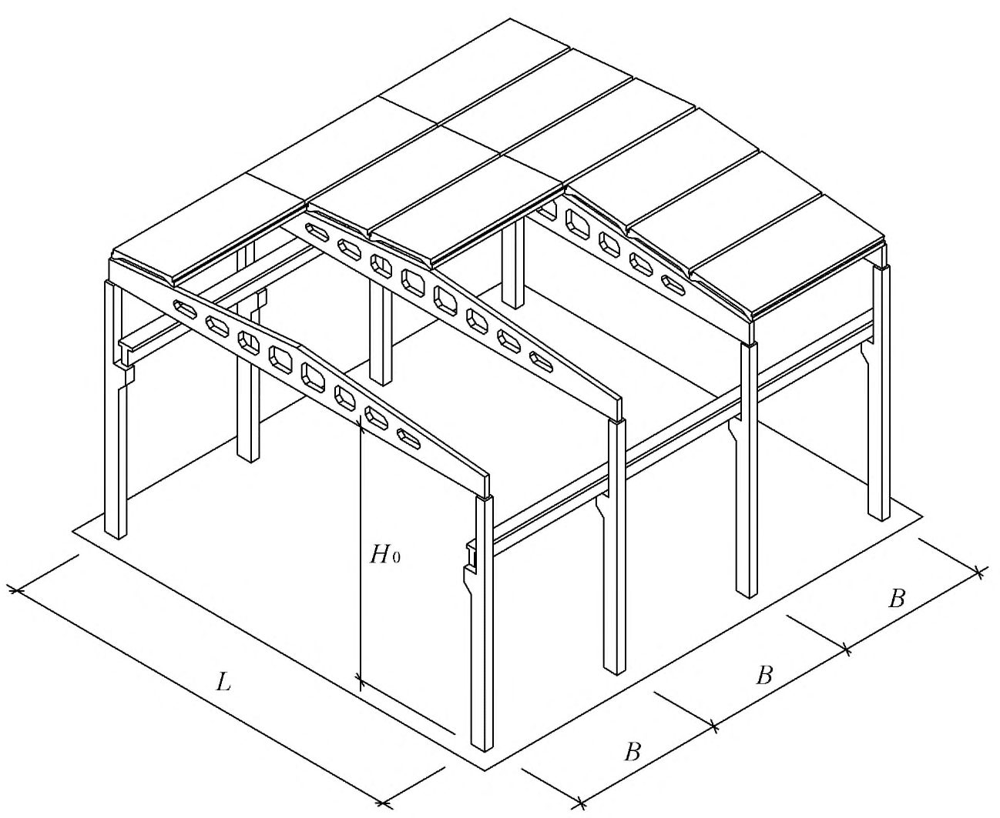
- 12, 15, 18, 21, 24, 30 (36) м - при отсутствии или наличии мостовых кранов;
- 9, 12, 15, 18 м - при наличии подвесного подъемно-транспортного оборудования.
Примечание - Пролет 36 м - при наличии соответствующего технико-экономического обоснования.
Высоту блоков с опорными кранами следует принимать равной округленной до значения кратного укрупненному модулю суммы входящих в него размеров: максимальной высоты подъема крюка крана, требуемой для данного производства; габаритного размера крана по высоте от верхнего положения его крюка до верхнего контура его конструкций и механизмов; минимально допустимого габарита приближения крана к стропильным конструкциям, равного 100 мм, а также размера предельного прогиба несущих конструкций покрытия, определяемого по СП 20.13330.
При устройстве проходов вдоль подкрановых путей с одной стороны колонн привязку колонн среднего ряда к координационным осям следует принимать по сечению подкрановой части колонн.
В зданиях с мостовыми кранами привязку колонн крайнего продольного ряда к координационной оси следует принимать:
- 0 мм - при шаге колонн 6 м, грузоподъемности крана до 32 т включительно, высоте здания H 0 (рисунок 5.1) не более 14,4 м;
- 250 мм - в случае невыполнения хотя бы одного вышеприведенного условия. а - средние ряды; б - крайние ряды
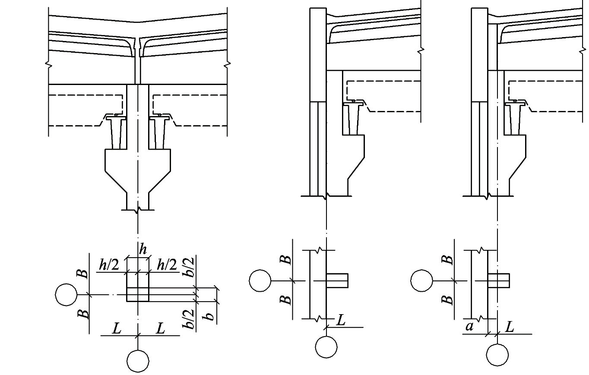
Рисунок 5.2 - Привязка колонн к координационным осям
При привязке колонн среднего и крайнего рядов в торцах зданий к поперечным координационным осям необходимо совмещать поперечную ось с внешней гранью колонны, или смещать геометрическую ось колонны с поперечной координационной оси на расстояние a = 500 или более (кратно 250) мм внутрь здания (рисунок 5.3, а ).
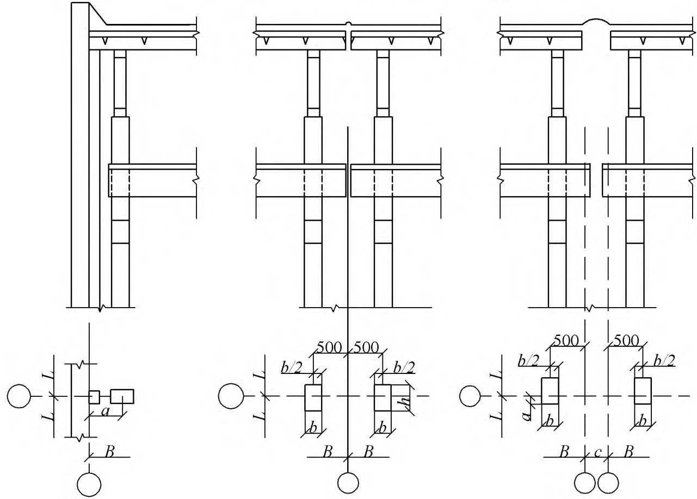
а - торец зданий; б - поперечный температурный шов
Рисунок 5.3 - Привязка колонн к координационным осям
Ось поперечного температурного шва на парных колоннах с пролетами равной высоты следует совмещать с поперечной координационной осью (рисунок 5.3, б ). Допускается в пределах вставки принимать ширину шва между двумя поперечными координационными осями кратной 50 мм.
Рисунок 5.4 - Привязка колонн в продольных температурных швах со вставкой
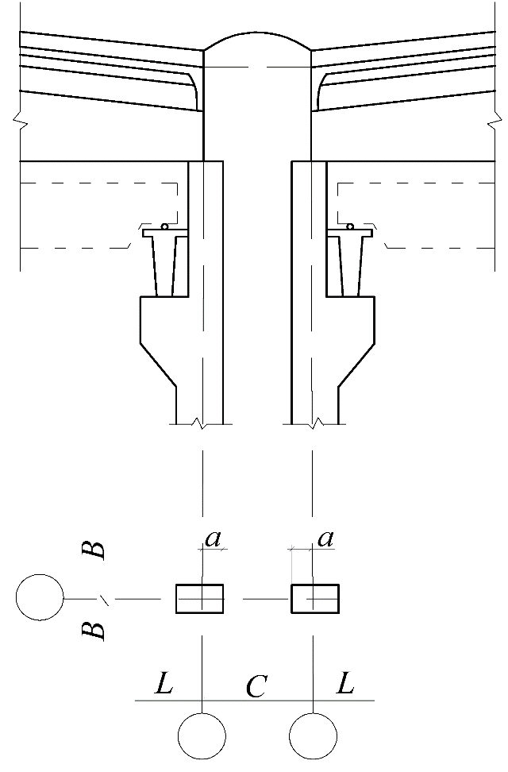
Привязку колонн к продольным координационным осям принимают в зависимости от шага колонн, грузоподъемности, режима работы и вида кранового оборудования (рисунок 5.5). Вставка должна быть равна округленной сумме следующих размеров: привязки к продольным координационным осям граней колонны, обращенных в сторону перепада; зазора между наружной гранью колонн повышенного пролета и внутренней плоскостью стены; толщины стены и зазора не менее 50 мм между наружной плоскостью этой стены и гранью колонн пониженного пролета.
Рисунок 5.5 - Привязка колонн в перепадах высот в параллельных пролетах
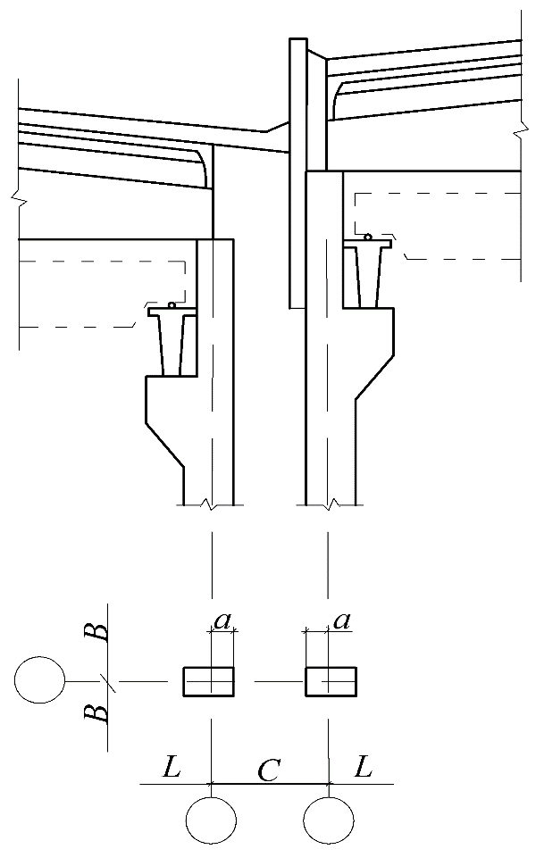
Рисунок 5.6 - Привязка колонн в месте примыкания взаимно перпендикулярных пролетов
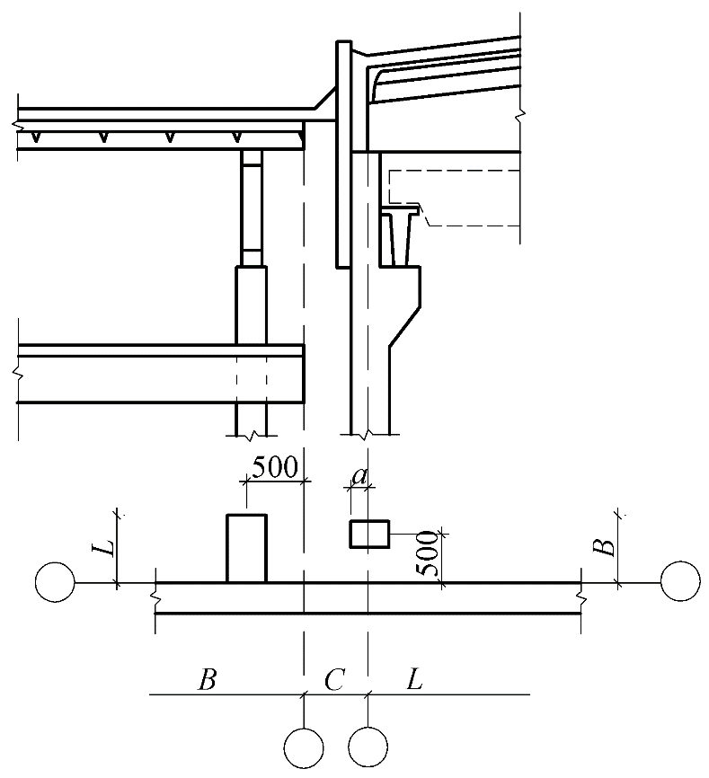
5.2Конструктивные системы каркасов одноэтажных зданий
Жесткий диск покрытия образуется плитами покрытия, приваренными к стропильным фермам или балкам с последующим замоноличиванием швов.
- по первой схеме колонны по крайним рядам устанавливают с шагом 6 м, по среднему ряду, где шаг колонн 12 м, устанавливают подстропильные конструкции и на них опирают стропильные фермы или балки через 6 м, перекрывая пролеты здания в поперечном направлении и опирая их на колонны крайних рядов.
- по второй схеме основные колонны крайних и средних рядов устанавливают с шагом 12 м, стропильные конструкции устанавливают через 12 м и пролет между ними перекрывают плитами длиной 12 м.
Для каркасов одноэтажных зданий с железобетонными колоннами следует применять стальные вертикальные связи (рисунок 5.7):
- крестовые - при шаге 6 м;
- портальные - при шаге 12 м.
Связи следует выполнять из прокатных уголков и соединять с колоннами путем сварки косынок крестов с закладными деталями, возможно крепление связей непосредственно к фундаментам.
Допускается использовать вариант натягиваемых тросов в качестве связей.
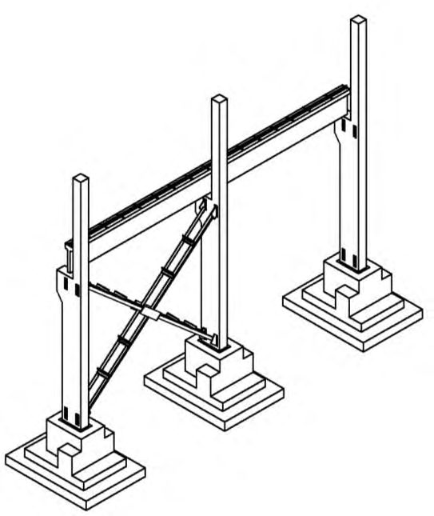
а - крестовые связи; б - портальные связи
Рисунок 5.7 - Конструкция вертикальных продольных связей между колоннами
- то же по
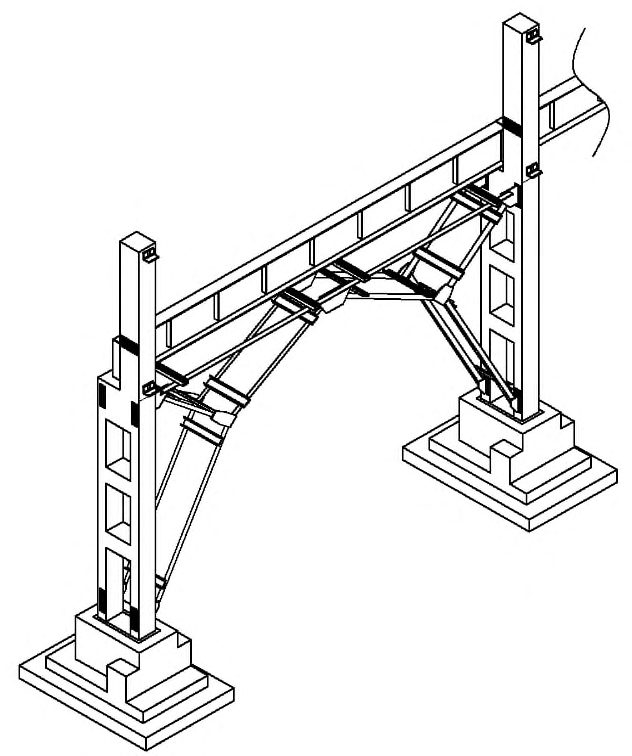
а - вертикальные связи; б - горизонтальные связи по нижнему поясу; в верхнему поясу; г - связи фонаря;
1 - вертикальные связевые фермы; 2 - распорка поверху колонн; 3 - вертикальные связи по колоннам; 4 - стропильная конструкция; 5 - распорка по центру верхнего пояса ферм в фонаре; 6 - плоскость остекления фонаря; 7 - фермы фонаря
Рисунок 5.8 - Схемы связей покрытия
СП 355.1325800.2017 устанавливать распорки, которые в крайних пролетах температурного блока прикрепляют к горизонтальным фермам из стальных уголков (рисунок 5.8, в ). Если же фонарь не доходит до конца температурного блока, то горизонтальную связевую ферму по верхнему поясу стропильных конструкций не устраивают, а распорки прикрепляют к элементам покрытия крайнего пролета.
5.3Подъемно-транспортное оборудование
Для обработки грузов массой более 5 т с перемещением их в трех взаимно перпендикулярных направлениях (вдоль цеха, по ширине пролета и по высоте) следует применять опорные краны (в большинстве случаев мостовые).
- 750 мм - при грузоподъемности крана до 50 т включительно при отсутствии проходов вдоль подкрановых путей;
- 1000 мм - при наличии проходов вдоль подкрановых путей при кранах грузоподъемностью до 50 т включительно и при грузоподъемности крана более 50 т.
Необходимость устройства проходов для осмотра подкрановых путей возникает в зданиях с тяжелым режимом работы кранов.
Минимальный размер приближения габарита крана к надкрановой части колонны δ следует принимать 60 или 75 мм.
Если подъемно-транспортные механизмы обслуживают только узкую рабочую полосу цеха, целесообразно применять вместо подвесных кранов монорельс, представляющий собой двутавровую балку, прикрепленную к нижнему поясу стропильной конструкции покрытия (балке, ферме).
Рисунок 5.9 - Привязка к осям здания мостового опорного крана
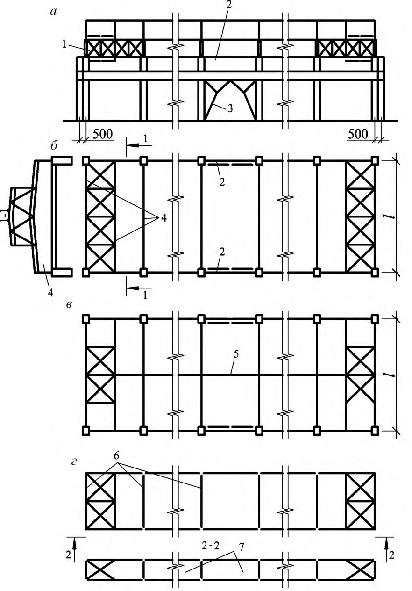
Необходимость регулярной замены технологического оборудования требует гибких объемно-планировочных решений зданий. Оборудование в таких зданиях устанавливают на силовой пол, собственные фундаменты или на сборно-разборные встроенные этажерки, конструкции которых не связаны с конструкциями каркаса. Мостовые краны при этом заменяют напольными или мобильными грузоподъемными транспортными средствами. При необходимости применения мостовых кранов на отдельных участках их размещают на самостоятельных эстакадах. а - один подвесной кран для пролетов 12 и 18 м; б - то же, 18 и 24 м; в - то же, 30 и 36 м; г - два подвесных крана для пролета 30 м
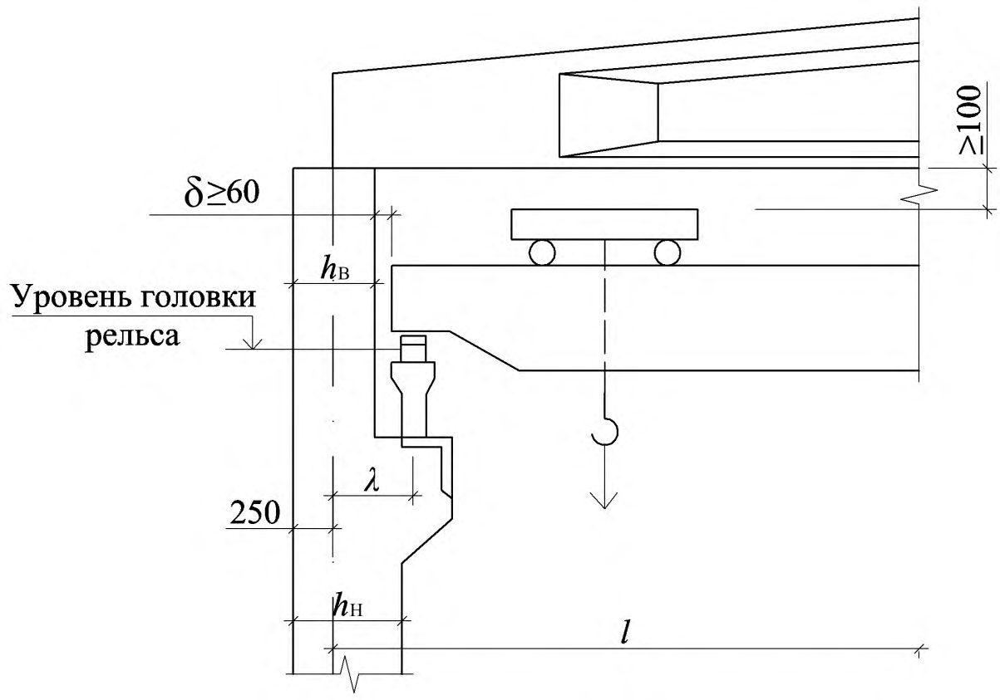
Рисунок 5.10 - Схемы расположения подвесных кранов в пролете
6Расчет несущей системы здания
6.1Нагрузки и воздействия
СП 355.1325800.2017 оси опоры стропильной конструкции и может передаваться на колонну с эксцентриситетом:
- в верхней надкрановой части: е = 0,25 / 2 = 0,125 м - при привязке 250 мм; е = 0 - при нулевой привязке.
- в нижней подкрановой части: е = (h н - h в ) / 2 - 0,125 - при привязке 250 мм; е = (h н - h в ) / 2 -при нулевой привязке.
Нагрузка F приложена с моментом M=Fe.
при этом давление на колонну на противоположной стороне
Соответствующие моменты от крановой нагрузки следует определять по формулам:
СП 355.1325800.2017 а - нагрузка, действующая на поперечную раму; б - к определению вертикальной нагрузки от мостового крана на колонну; в - к определению моментов от крановой нагрузки на колонну
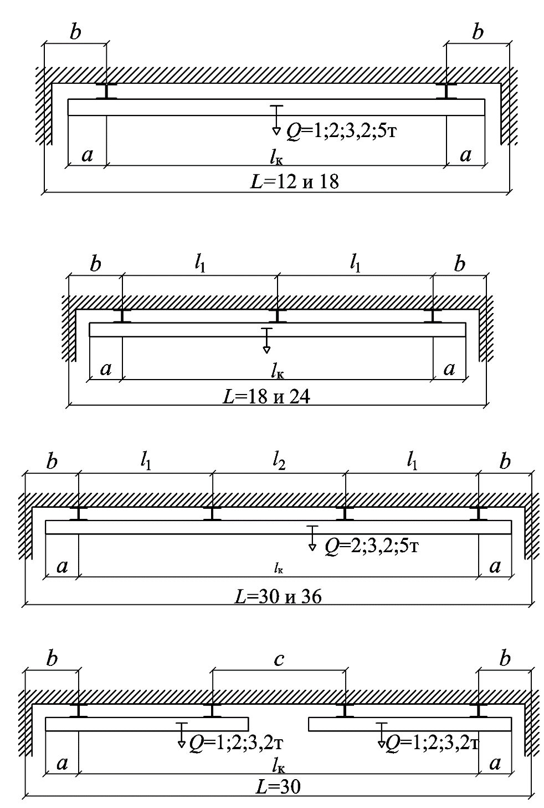
Рисунок 6.1 - Расчетно-конструктивная схема поперечной рамы
Ветровое давление, действующее на фонарь и часть стены, расположенной выше колонн, передается в расчетной схеме в виде сосредоточенной силы W .
- где t в - температура воздуха, принимаемая для отапливаемых зданий равной расчетной температуре воздуха помещений по технологическому заданию для теплотехнических расчетов наружных ограждений, а для неотапливаемых зданий - средней температуре воздуха наиболее холодной пятидневки или средней температуре воздуха в 13 ч самого жаркого месяца района строительства;
- t з -температура воздуха в период закрепления на колонне горизонтальных конструкций (замыкание системы), принимаемая равной средней температуре воздуха за три самых холодных или жарких месяца района строительства.
В расчете учитывается наиболее неблагоприятное значение изменения температуры t р .
6.2Расчетная схема каркаса здания
- расчет несущей системы с определением усилий и деформаций;
- расчет элементов конструктивной системы (колонн, стропильных и подстропильных конструкций, плит покрытия, фундаментов) по первой и второй группам предельных состояний;
- расчет зданий на прогрессирующее обрушение для обеспечения прочности и устойчивости каркаса при возможной аварийной ситуации, которую следует предусматривать для зданий классов КС-3 и КС-2 с массовым нахождением людей согласно 5.2.6 ГОСТ 27751-2014;
- оценку несущей способности основания и деформации фундаментов.
Для расчета рекомендуется применять дискретные расчетные модели, используя программные комплексы с методом конечных элементов (МКЭ), в инструкциях к которым содержатся детализированные указания по их применению, в том числе по разбивке на участки.
Значения жесткости железобетонных элементов определяют по поперечному сечению с учетом образования трещин и развития неупругих деформаций в бетоне и арматуре по диаграммам состояния, соответствующим кратковременному и длительному действиям нагрузки.
При применении упрощенных диаграмм состояния бетона и арматуры значение жесткости железобетонных элементов на ее начальном участке определяется как для упругого тела. На следующих участках необходимо учитывать напряженное состояние по принятой диаграмме в соответствии с разделом 6 СП 63.13330.2012.
Учитывая, что распределение усилий в элементах конструктивных систем, в основном, зависит не от значений жесткостей, а от соотношения жесткостей этих элементов, рекомендуется принимать модуль упругости бетона Еb с понижающими коэффициентом 0,85.
Запас по устойчивости должен быть не менее чем двукратным.
При расчете устойчивости положения конструктивные системы следует рассматривать как жесткое недеформированное тело. При расчете на опрокидывание удерживающий момент от вертикальной нагрузки должен превышать опрокидывающий момент от горизонтальной нагрузки с коэффициентом 1,5. При расчете на сдвиг удерживающая горизонтальная сила должна превышать действующую сдвигающую силу с коэффициентом 1,2. При этом следует учитывать наиболее неблагоприятные значения коэффициентов надежности по нагрузке.
СП 355.1325800.2017 конструкций, и объединенных связями сдвига в плоскости и из плоскости покрытия. Продольные швы между плитами воспринимают только сжимающие и сдвигающие усилия
Расчеты наклонных и пространственных сечений железобетонных элементов следует производить на основе полученных комбинаций усилий по схемам, приведенным в СП 63.13330.
7Проектирование конструктивных элементов
7.1Фундаменты
- столбчатые фундаменты на естественном основании;
- ленточные фундаменты на естественном основании;
- сплошные (плитные) фундаменты на естественном основании;
- свайные фундаменты.
Расчет оснований
При расчете фундаментов по прочности и по раскрытию трещин возникающие в них усилия от температурных и им подобных деформаций принимаются изменяющимися вертикально по прямой от полного значения
СП 355.1325800.2017 усилия у места заделки колонны в фундамент до половинного значения на уровне подошвы фундамента
Столбчатые фундаменты на естественном основании
Общие данные
Площадь сечения подошвы фундамента следует принимать по расчету, исходя из усилий, передаваемых колонной и допускаемых удельным давлением грунта, определенным в соответствии с 5.6.26-5.6.30 СП 22.13330.2016.
7.1.15 Высоту фундамента следует принимать исходя из условий: а) обеспечения жесткой заделки колонны в фундаменте H ф.з ≥ h з + 250 мм, где:
- для сплошной колонны h з ≥ h 1 и h з ≥ 1,5 b , где h 1 и b - высота и ширина сечения колонны в подкрановой части;
- для двухветвевой колонны h з ≥ 0,5+ 0,33 h 1 и h з ≥ 1,5 b ; б) обеспечения анкеровки рабочей арматуры колонн H ф. an ≥ l an + 250 мм, где l an следует определять в соответствии с 10.3.25 СП 63.13330.2012; в) устройства фундамента ниже глубины промерзания грунта df , которую следует определять в соответствии с 5.5.4 СП 22.13330.2016.
В перечислениях а) и б) 250 мм - минимальная толщина дна стакана 200 мм с учетом подливки под колонну 50 мм.
Определение площади подошвы фундамента
где Mк и Qк - момент и поперечная сила колонны на уровне верха фундамента; h -высота фундамента.
Расчет плитной части фундамента на продавливание
Рисунок 7.1 - Схема для расчета фундамента на продавливание
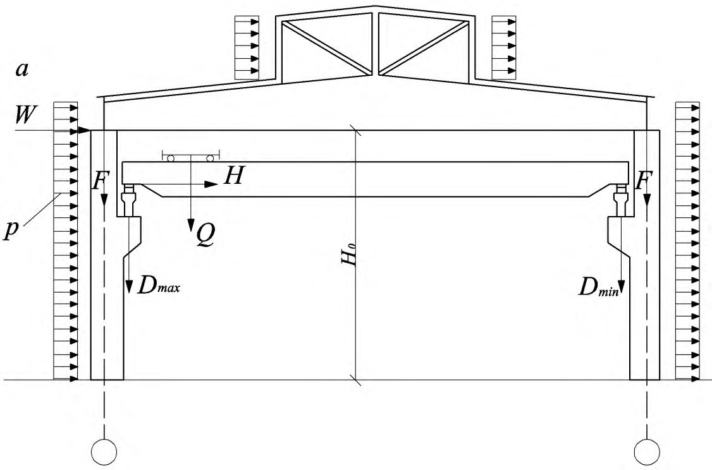
Момент сопротивления контура расчетного поперечного сечения Wb определяют по формуле
где l c и bc - см. рисунок 7.1; h 0 -рабочая высота плитной части фундамента, равная среднеарифметическому значению рабочих высот для арматуры плиты в направлении размеров l и b .
где Ac = 2 (bc+lc)dc площадь боковой поверхности колонны, заделанной в стакан фундамента.
Рисунок 7.2 - К расчету фундамента стаканного типа на продавливание
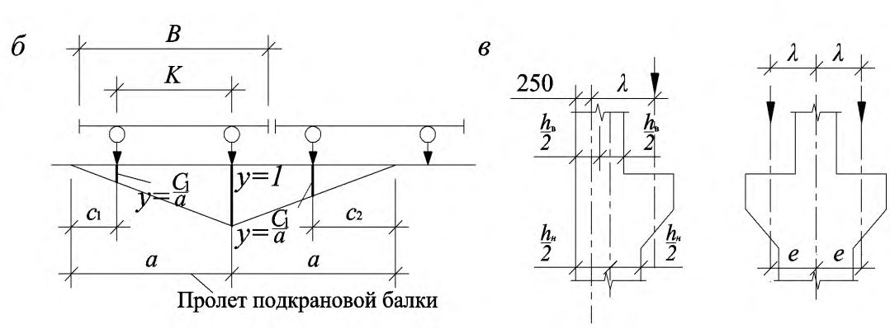
Расчет фундамента на раскалывание
Рисунок 7.3 - К расчету фундамента стаканного типа на раскалывание
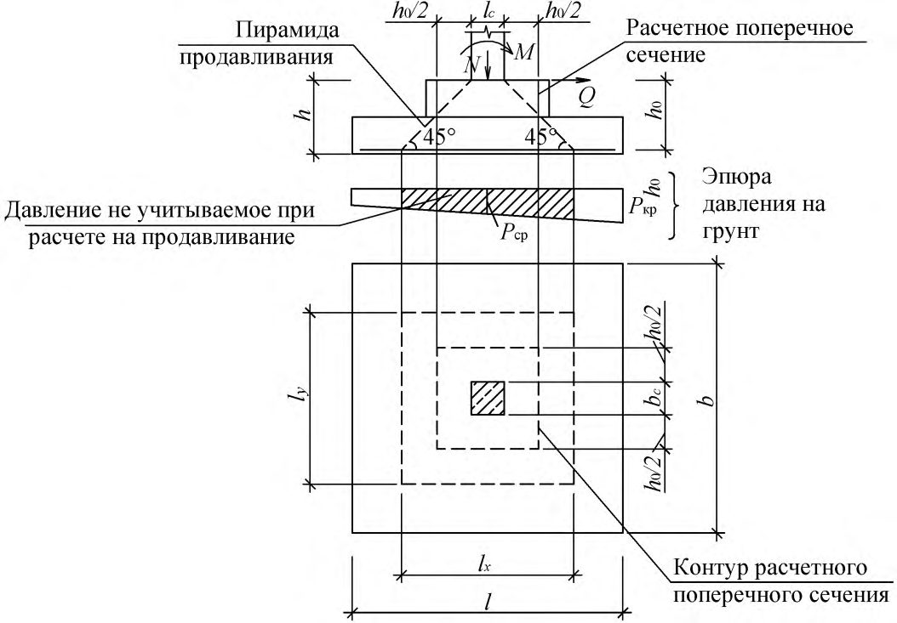
Расчет фундамента на местное сжатие
Расчет нормальных сечений плитной части фундамента
где р кр - краевое давление грунта, определенное без учета веса фундамента и грунта на его уступах, т. е. при mtd = 0;
М ф -момент, определенный по формуле (7.1).
При этом должно выполняться условие
где bv ширина верхней части рассматриваемого сечения;
As - площадь сечения арматуры по всей ширине подошвы b .
Расчет подколонника и его стаканной части
В железобетонных внецентренно сжатых подколонниках площадь сечения арматуры с каждой стороны (А и А ' ) должна быть не менее 0,05 % площади поперечного сечения подколонника.
Железобетонные подколонники армируются продольной и поперечной арматурой по рисунку 7.4.
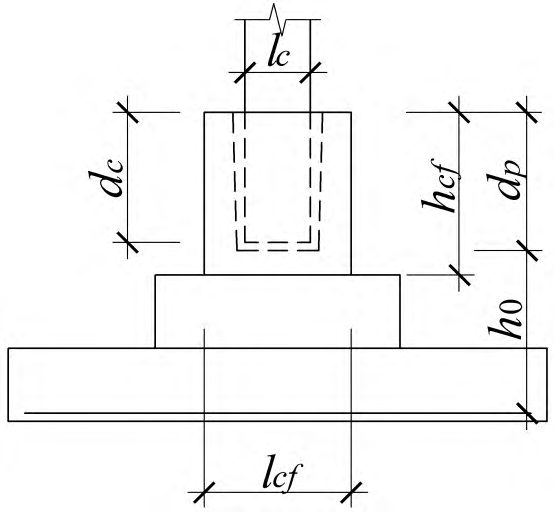
Рисунок 7.4 - Армирование подколонника и его стаканной части
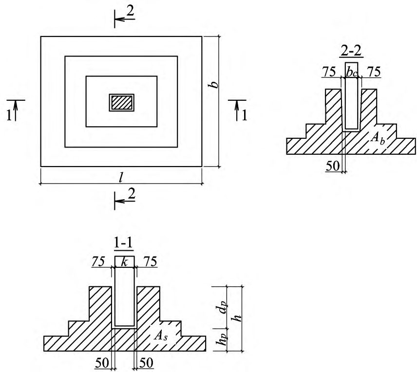
а -расчетная растянутая арматура в одной плоскости; б - то же, в двух плоскостях
Рисунок 7.5 - Армирование фундаментов колонн сварными сетками с навеской их на опалубку
Рисунок 7.6 - Расчетная схема стаканной части подколонника
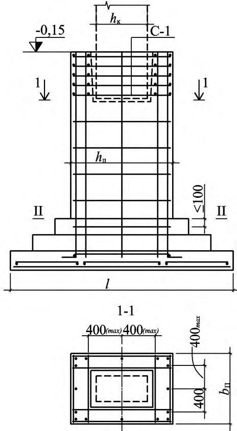
Поперечная арматура подколонника (рисунок 7.6) в сечениях III-III или III' -III' определяется по расчету на момент от действующих сил относительно оси, проходящей через точку k или k' поворота колонны.
Моменты принимаются равными
При одинаковых диаметрах поперечной арматуры и одинаковой марке стали площадь сеченая поперечной рабочей арматуры каждой сварной сетки равна
Если это необходимо по расчету, рекомендуется увеличивать диаметр стержней двух верхних сеток по сравнению с остальными сетками, диаметр стержней которых назначается в соответствии с 7.1.34.
В случае заглубления стакана в плитную часть фундамента (рисунок 7.7) сечение поперечной рабочей арматуры сеток определяется по формулам (7.7) и (7.8); сетки поперечного армирования устанавливаются в пределах подколонника.
Рисунок 7.7 - Расчетная схема стаканной части при заглублении стакана в плитную часть фундамента
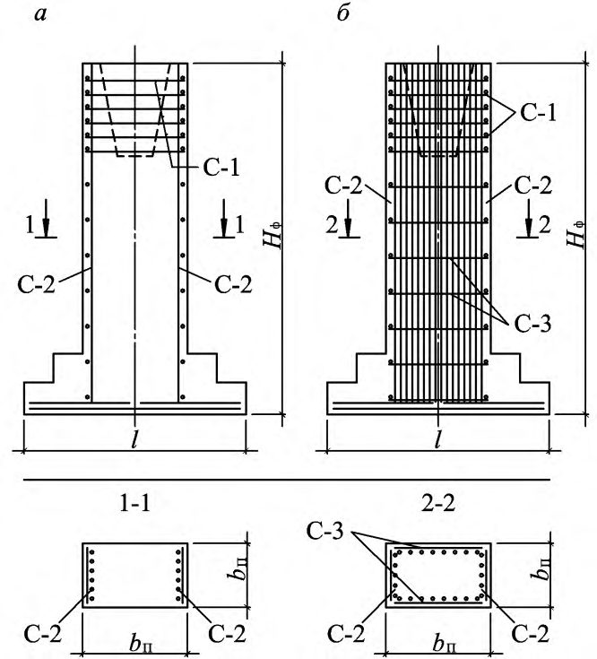
Рисунок 7.8 - Расположение сварных сеток при армировании фундамента узкими сетками
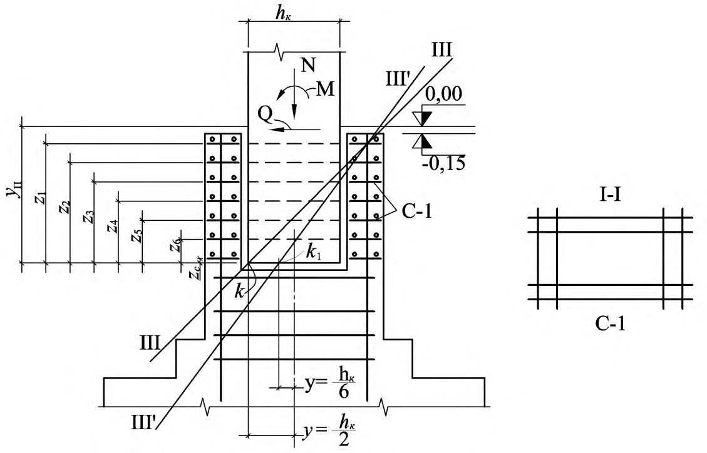
СП 355.1325800.2017
В случае действия нормальной силы в пределах ядра сечения 0 6 c l e поперечное армирование подколонника назначается конструктивно.
Конструктивные требования
При внецентренной нагрузке фундамент рекомендуется принимать прямоугольной формы с соотношением сторон прямоугольной подошвы фундамента от 0,6 до 0,85.
Диаметр рабочих стержней, укладываемых вдоль стороны фундамента размером 3 м и менее, должен быть не менее 10 мм; диаметр рабочих стержней, укладываемых вдоль стороны размером более 3 м, - не менее 12 мм
Арматурные сетки должны быть сварены во всех точках пересечения стержней. Допускается часть пересечений связывать проволокой при условии обязательной сварки всех точек пересечения в двух крайних рядах по периметру сеток.
При возможности изготовления и транспортирования сеток больших размеров требуемых диаметров допускается армировать подошвы фундаментов цельными сетками.
Диаметр продольных рабочих стержней подколонников должен быть не менее 12 мм.
В тех случаях когда выполняются условия 7.1.25 и 7.1.26, армирование подколонников осуществляется сварными сетками, устанавливаемыми, в зависимости от расчета, по двум или четырем сторонам подколонника (рисунок 7.9 ). В этом случае соединение продольных стержней сеток хомутами или шпильками не производится; толщина защитного слоя бетона должна быть не менее 50 мм и не менее двух диаметров продольной арматуры.
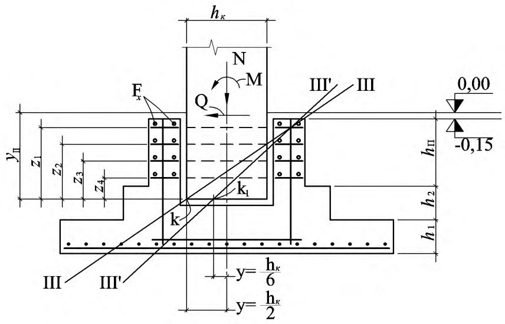
Рисунок 7.9 - Армирование фундаментов колонн пространственными самонесущими арматурными каркасами, собираемыми из плоских сеток
Поперечное армирование стенок стакана следует выполнять в виде сварных плоских сеток с расположением стержней у наружных и внутренних поверхностей стенок.
Диаметр стержней сеток следует принимать по расчету, но не менее 8 мм и не менее четверти диаметра продольных стержней подколонника.
Расстояние между сетками следует назначать не более четверти глубины стакана и не более 200 мм.
Подколонник ниже дна стакана армируется в соответствии с 7.1.35 - по общему принципу армирования подколонников. Продольная рабочая арматура подколонника, устанавливаемая по расчету, должна проходить внутри ячеек сеток поперечного армирования.
Ленточные, сплошные и свайные фундаменты
Рисунок 7.10 - Ленточные монолитные фундаменты под колонны
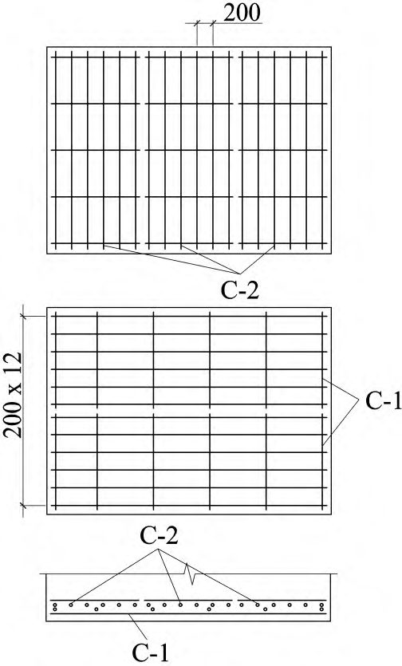
Сплошные фундаменты бывают: плитными безбалочными, плитнобалочными и коробчатыми (рисунок 7.11). Наибольшей жесткостью обладают коробчатые фундаменты. а плитный безбалочный; б плитно-балочный; в коробчатый
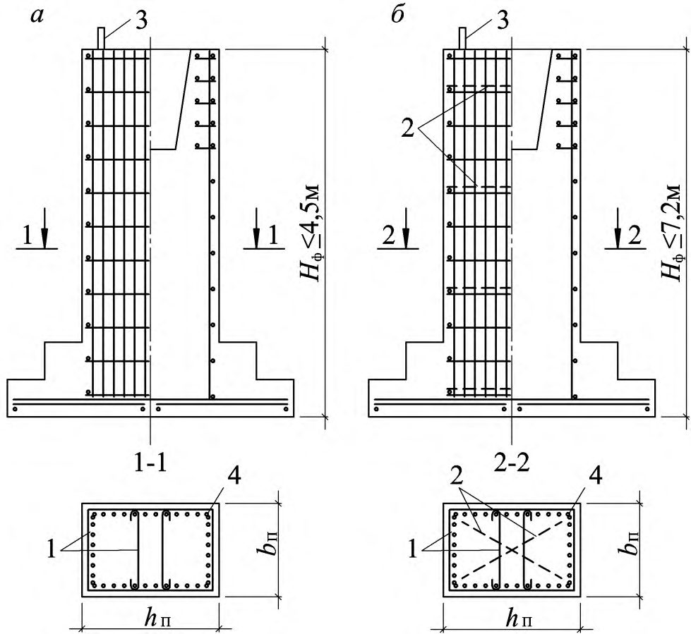
Рисунок 7.11 - Сплошные фундаменты под колонны
Свайные фундаменты состоят из отдельных свай, объединенных вверху ростверком в виде железобетонной плиты или балки.
7.2Фундаментные балки
Общие данные
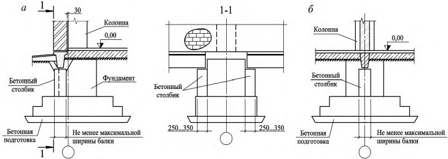
Рисунок 7.12 - Опирание фундаментных балок на фундаменты колонн
Расчет фундаментных балок
- на нагрузки, действующие в период возведения стен, от собственного веса фундаментной балки и веса свежеуложенной неотвердевшей кладки;
СП 355.1325800.2017
- на нагрузки, действующие в законченном здании, от собственного веса фундаментной балки, веса отвердевшей кладки и различных местных распределенных нагрузок, приложенных к стене в случае, если она является несущей.
Для вычисления усилий в сечениях фундаментной балки предварительно определяют очертание, интенсивность и расположение эпюр давления, которые в дальнейшем рассматриваются как внешняя нагрузка на балку.
Эпюру распределения давления следует принимать в соответствии с 9.50 СП 15.13330.2012, а при наличии проемов - в соответствии с 9.52 СП 15.13330.2012.
Конструктивные требования
7.3Колонны
Общие данные
- от типа сечения:
- сплошного поперечного сечения,
- сквозного поперечного сечения (двухветвевые);
- от наличия кранового оборудования:
- бескрановые,
- крановые;
- от наличия прохода в уровне кранового пути:
- без прохода,
- с проходом;
- от числа консолей:
- бесконсольные,
- одноконсольные,
- двухконсольные;
- от назначения фахверка:
- рядовые,
- торцевые.
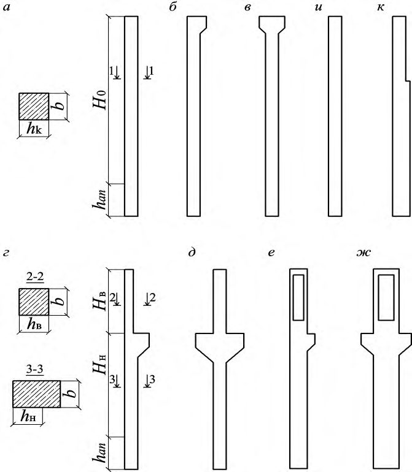
а - колонна бесконсольная; б - колонна одноконсольная; в - колонна двухконсольная; г -колонна крановая одноконсольная; д - колонна крановая двухконсольная; е - колонна крановая с проходом одноконсольная; ж - колонна крановая с проходом двухконсольная; и - колонна продольного фахверка; к - колонна торцевого фахверка
Рисунок 7.13 - Виды колонн сплошного сечения и с проходом в надкрановой части
где Н п.б. - высота подкрановой балки;
Н р - высота кранового рельса;
Н кр - высота крана на опоре; δ -минимально допустимый габарит приближения крана к стропильным конструкциям (5.1.5). а - колонна одноконсольная, колонна для продольного и торцевого фахверка; б - колонна двухконсольная; в - колонна с проходом одноконсольная; г - колонна с проходом двухконсольная
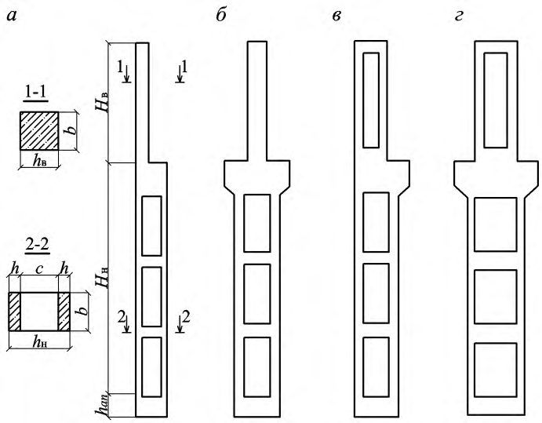
Рисунок 7.14 - Виды колонн сквозного сечения (двухветвевые)
Высоту колонны в подкрановой части следует определять по формуле
где Н г.к.р - отметка верха кранового рельса; а 1 - отметка верхнего обреза фундамента (7.1.9).
Полную высоту колонны от верхнего обреза фундамента следует определять по формуле
При этом габаритный размер здания H = H к -а 1 должен быть кратным 0,6 м.
Высоту сечения h в крайних колонн следует определять по формуле, округляя в меньшую сторону кратно 100 мм, но не менее 380 мм
- где a привязка колонн крайнего продольного ряда к координационным осям (5.1.7);
- λ - расстояние от продольной разбивочной оси до оси подкранового рельса (5.3.3);
B - расстояние от оси подкранового рельса до торца крана; δ - минимальный размер приближения габарита крана (5.3.3).
Высоту сечения h в средних колонн следует определять исходя из условия обеспечения опирания стропильных конструкций.
Выбор колонн для расчета
Так, для регулярных рам при бесконечно жестком диске покрытия (если все колонны крайних и средних рядов одинаковые) обычно рассчитывается вторая от торца или температурного шва колонна по крайнему и среднему ряду, при этом из колонн средних рядов рассчитывается колонна, ближайшая к крайнему ряду. Эти колонны - расчетные, так как в них действуют наибольшие усилия от вынужденных перемещений, в то время как усилия от других нагрузок такие же, как и в остальных колоннах. Сечения колонн крайних поперечных рам не проверяются, если эти колонны такие же, как и соответствующие колонны примыкающей рядовой рамы, и при этом
СП 355.1325800.2017 вертикальная нагрузка на них не превышает вертикальной нагрузки на соответствующие колонны рядовой рамы. Колонны крайних поперечных рам следует проверять при действии на них больших местных нагрузок.
При действии изгибающих моментов одновременно в плоскости поперечной и продольной рамы расчет как колонн сплошного сечения, так и ветвей двухветвевых колонн производится на совместное действие этих моментов и продольной силы.
Расчетные сочетания усилий в сечениях колонн
- минимальная продольная сила N min и соответствующий наибольший момент;
- максимальная продольная сила N max и соответствующий наибольший момент;
- максимальный момент M max и соответствующая продольная силы.
При сочетаниях нагрузок, которым соответствует N max или M max, определяется (при заданном сечении колонны) марка бетона и сечение сжатой арматуры, а при сочетаниях, соответствующих N min или M max, сечение растянутой арматуры.
СП 355.1325800.2017
- минимальная продольная сила N min и соответствующие ей наибольший момент и поперечная сила;
- максимальная продольная сила N max и соответствующие ей наибольший момент и поперечная сила;
- максимальный момент M max и соответствующие ему продольная и поперечная силы;
- максимальная поперечная сила Q max и соответствующие ей продольная сила и момент.
Если при N max обе ветви сжаты, а при N min одна сжата, а другая растянута, что выражается условием пр x m n 1 ma i М е N N , то опасным для более сжатой ветви может оказаться промежуточное граничное состояние, соответствующее отсутствию продольного усилия в одной ветви; при этом вся поперечная сила передается на сжатую ветвь, вследствие чего моменты в ней резко возрастают. Этому состоянию соответствует продольная сила в сечении колонны пр 1 N М е = продольное усилие в сжатой ветви будет таким же.
Здесь момент М пр принимают соответствующим N max, а момент в сжатой ветви определяют, принимая Q также соответствующим N max.
Особенности расчета двухветвевых колонн
- в) верхняя распорка колонны принимается бесконечно жесткой, так как ее погонная жесткость во много раз превышает жесткость ветвей и рядовых распорок; г) при наличии растяжения в ветви в пределах какой-либо панели жесткость на изгиб ветви на этом участке при расчете по предельному состоянию первой группы принимается равной нулю. В этом случае моменты в сжатой ветви и в распорке определяются из условия передачи всей поперечной силы в сечении колонны на сжатую ветвь. Растянутая ветвь при усилиях от нормативных значений нагрузок обладает некоторой жесткостью, поэтому при расчете трещиностойкости по предельному состоянию второй группы считается, что в этой ветви действует момент, значение которого определяется из условия передачи на нее 1/6 поперечной силы в сечении колонны. При расчете по деформированной схеме в этом случае жесткость растянутой ветви принимается равной жесткости на изгиб ее арматурного каркаса.
Расчетная схема двухветвевой колонны приведена на рисунке 7.15.
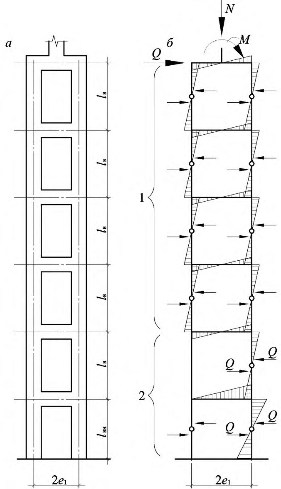
а - конструктивная схема; б - расчетная схема; 1 - обе ветви сжаты; 2 - левая ветвь растянута
Рисунок 7.15 - Схема двухветвевой колонны
Особенности расчета фахверковых колонн
Опирание фахверковых колонн на фундаменты обычно принимается шарнирным даже при заделке колонны в стакан фундамента, так как ввиду малых вертикальных нагрузок фундаменты получаются небольшими и могут поворачиваться. Однако при заделке фахверковой колонны в стакан фундамента из-за наличия бетонного основания под полы и отпора грунта на боковых поверхностях фундамента в нижнем сечении колонны могут возникать значительные моменты. Допуская образование в этом сечении пластического шарнира, при проверке прочности эти моменты можно не учитывать. При проверке трещиностойкости фахверковые колонны рассчитываются как защемленные в фундаменте. Предпочтительно осуществлять шарнирное соединение фахверковых колонн с фундаментами в упрощенном исполнении - по типу сопряжений стальных фахверковых колонн.
При расчете фундаментов фахверковых колонн считается, что на фундамент в уровне его верха действуют только продольные и поперечные силы.
Учет продольного изгиба колонны
В таблице 7.1 и [2] приведены расчетные длины колонн или их участков.
Высоту подкрановой части колонны следует определять от верха фундамента до низа подкрановой балки, а высоту надкрановой части колонны - от верха ступени фундамента до низа стропильной конструкции.
где N - продольная сила.
СП 355.1325800.2017
Таблица 7.1 Расчетные длины колонн
| Расчетная длина l 0 колонны в плоскости | Расчетная длина l 0 колонны в плоскости | Расчетная длина l 0 колонны в плоскости | Расчетная длина l 0 колонны в плоскости | |||
|---|---|---|---|---|---|---|
| продольной рамы | продольной рамы | продольной рамы | ||||
| Характеристика колонн, зданий | и вида | нагрузки | попереч- | при наличии связей | при наличии связей | при отсут- ствии |
| ной рамы | до уровня подкра- новых балок | до верха колон- ны | связей | |||
| Подкрановая (нижняя) часть колонн при | разрезных | 1,5 Н н | 0,8 Н н | 0,8 Н н | 1,2 Н н | |
| подкрановых балках | неразрез- ных | 1,2 Н н | 0,8 Н н | 0,8 Н н | 0,8 Н н | |
| Надкрановая (верхняя) часть колонн | разрезных | 2 Н в | 1,5 Н в | 1 Н в | 2 Н в | |
| при подкрановых балках | неразрез- ных | 2 Н в | 1,5 Н в | 1 Н в | 1,5 Н в | |
| Подкрановая (нижняя) | однопро- летных | 1,5 Н н | 0,8 Н н | 0,8 Н н | 1,2 Н н | |
| часть колонн зданий | двух- и многопро- летных | 1,2 Н н | 0,8 Н н | 0,8 Н н | 1,2 Н н | |
| Надкрановая (верхняя) | однопро- летных | 2,5 Н в | 1,5 Н в | 1 Н в | 2 Н в | |
| часть колонн при подкрановых балках | двух- и многопро- летных | 2 Н в | 1,5 Н в | 1 Н в | 1,5 Н в | |
| Здания без мостовых | однопролетных зданий | однопролетных зданий | 1,5 Н | - | 0,8 Н | 1,2 Н |
| Здания без мостовых | двух- и многопролетных зданий | двух- и многопролетных зданий | 1,2 Н | - | 0,8 Н | 1,2 Н |
СП 355.1325800.2017 где М - суммарный момент, за исключением момента от температурных перемещений Mt и момента от удлинения нижних граней конструкций покрытия ML ; пс - коэффициент сочетания нагрузок.
При определении е 0 необходимо учитывать случайный эксцентриситет еa согласно 8.1.7 СП 63.13330.2012.
Знак эксцентриситета еa принимается таким, чтобы суммарный эксцентриситет е 0 достиг наибольшего абсолютного значения.
Расчет сечений колонн
При расчете прямоугольных сечений по первому случаю (когда относительная высота условной сжатой зоны сечения ξ в обоих направлениях меньше или равна относительной высоте условной сжатой зоны ξ s , соответствующей достижению в арматуре напряжений Rs ) прочность сечения при действии моментов в направлении обеих осей симметрии допускается определять по формуле
где Мх и Му - составляющие моменты от внешней нагрузки в плоскости поперечной и продольной рам, определенные с учетом влияния продольного изгиба колонны;
Мх пр и Му пр - предельные расчетные моменты, которые могут быть восприняты сечением при внецентренном его сжатии
СП 355.1325800.2017 заданной продольной силой N , эксцентрично приложенной в плоскостях X и Y .
Расчет по раскрытию трещин на стадиях изготовления, хранения, транспортирования и монтажа производят, принимая нормативное значение нагрузок с учетом коэффициента динамичности для стадий изготовления, транспортирования и монтажа и рассматривая эти нагрузки как кратковременные. Предельное раскрытие трещин в этих случаях составляет 0,4 мм.
Конструирование колонн
Продольное армирование
Продольная рабочая арматура внецентренно сжатых в одной плоскости колонн располагается по граням, перпендикулярным к плоскости изгиба колонн. При изгибе в двух направлениях продольную рабочую арматуру целесообразно концентрировать в углах сечения.
Расстояния между осями арматуры следует принимать в соответствии с 10.3.8 СП 63.13330.2012. По граням колонн, перпендикулярным к плоскости изгиба, при ширине этих граней до 400 мм устанавливается не менее двух продольных рабочих стержней арматуры; при большей ширине рабочие стержни устанавливаются на расстояниях не более 400 мм (рисунок 7.16). По граням колонны, параллельным к плоскости изгиба, при ширине этих граней более 500 мм устанавливается конструктивная продольная арматура (если эта
СП 355.1325800.2017 арматура не поставлена по расчету), так чтобы расстояние между продольными стержнями составляло не более 500 мм. Диаметр продольных рабочих стержней колонн принимается не менее 16 мм и не более 40 мм, диаметр продольных стержней конструктивной арматуры 12 мм.
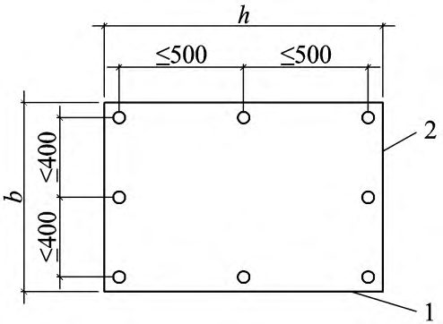
1 - грань, параллельная плоскости изгиба; 2 - грань, перпендикулярная к плоскости изгиба
Рисунок 7.16 - Размещение продольной арматуры в сечении колонны
В одном плоском каркасе продольные рабочие стержни рекомендуется принимать одного диаметра. При применении двух различных диаметров они должны отличаться не менее чем на два номера по сортаменту арматуры.
При необходимости продольные стержни допускается располагать без зазора между ними в соответствии с 10.3.5 СП 63.13330.2012.
где Q - расчетная поперечная сила (соответствующая случаю загружения, для которого определена точка теоретического обрыва) в сечении, соответствующем месту теоретического обрыва стержней; ds - расчетный диаметр обрываемого стержня; qsw - усилие в поперечной арматуре на единицу длинны элемента;
Asw - площадь сечения одного поперечного стержня или одной ветви хомута в плоскости изгиба;
СП 355.1325800.2017 п - число поперечных стержней или ветвей хомутов, расположенных в плоскости изгиба в рассматриваемом сечении; sw - расстояние между поперечными стержнями или хомутами.
В любом случае обрываемые в соответствии с огибающей эпюрой моментов и продольных сил сжатые и растянутые продольные стержни должны заводится на длину не менее l an , принимаемую по расчету в соответствии с 10.3.25 СП 63.13330.2012.
Продольная арматура верхнего участка в крановых колоннах (в месте изменения сечения колонны) заделывается также в бетоне нижнего участка на длину l an .
При стыковке рабочей арматуры внахлестку длину перепуска следует определять в соответствии с 10.3.30 СП 63.13330.2012.
Поперечное армирование
В местах стыкования продольной рабочей арматуры внахлестку без сварки поперечные стержни ставятся на расстоянии не более 10 d и не более 300 мм.
Если площадь требуемой по расчету сжатой продольной арматуры составляет с одной стороны сечения более 1,5 %, то поперечные стержни и хомуты устанавливаются на расстоянии не более 10 d.
При назначении расстояния между поперечными стержнями и хомутами не принимаются во внимание сжатые продольные стержни конструктивной арматуры диаметром 12 мм, не учитываемые в расчете.
Арматурные каркасы
Пространственные сварные каркасы образуются путем соединения плоских каркасов с помощью соединительных стержней и непосредственно друг с другом (рисунок 7.17). На этом рисунке для колонн, внецентренно сжатых в одной плоскости, h - ширина грани, параллельной плоскости изгиба, b - ширина грани, перпендикулярной к плоскости изгиба; для колонн, внецентренно сжатых в обеих плоскостях, b - меньший размер сечения, h -больший размер сечения. а - колонны, внецентренно сжатые в одной плоскости; б - колонны, внецентренно сжатые в обеих плоскостях; 1 - плоский каркас; 2 - соединительный стержень (поперечный привариваемый стержень или шпилька)
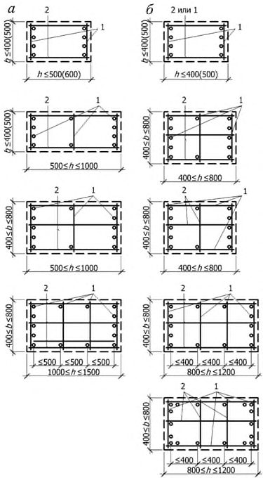
Рисунок 7.17 - Примеры конструкций пространственных сварных каркасов колонн
Если крайние плоские сварные каркасы, расположенные у противоположных граней, с промежуточными продольными стержнями, то они, по крайней связываются с продольными стержнями противоположной грани с помощью поперечных стержней или шпилек, устанавливаемых по длине каркаса на том же расстоянии, что и поперечные стержни плоских каркасов. Такие соединительные стержни не ставят при ширине грани до 500 мм, если число продольных стержней у этой грани не более четырех.
Плоские каркасы объединяют в пространственный каркас, приваркой соединительных поперечных стержней.
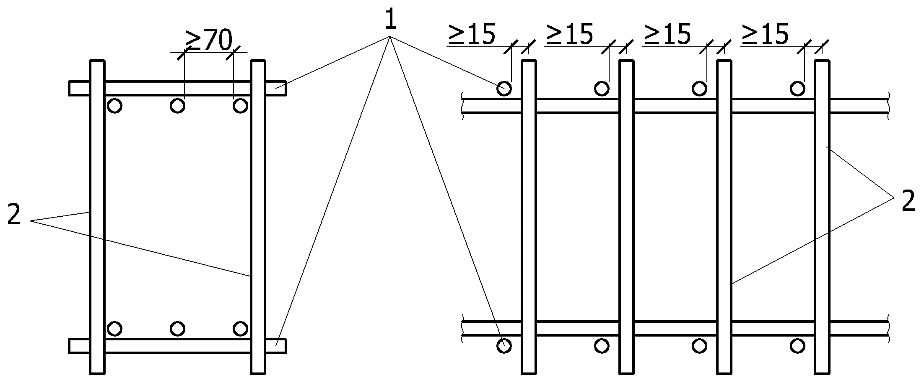
1 - плоские сварные каркасы; 2 - поперечные отдельные стержни, привариваемые точечной сваркой к продольным стержням плоских каркасов
Рисунок 7.18 - Конструкции сварного пространственного каркаса
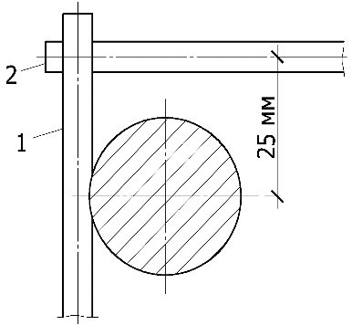
1 - поперечный стержень плоского каркаса; 2 - соединительный стержень
Рисунок 7.19 - Деталь сварки пространственного каркаса
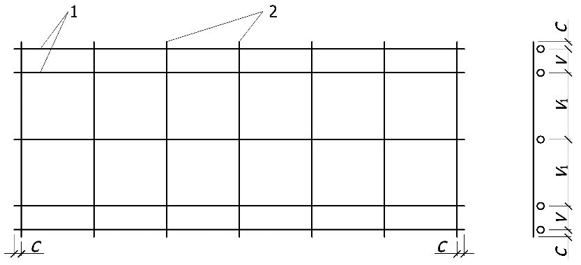
1 - продольные стержни; 2 - поперечные стержни
Рисунок 7.20 - Схема плоского сварного арматурного каркаса
При образовании общего пространственного сварного каркаса колонны отдельные поперечные стержни плоских каркасов при пересечении их другим плоским каркасом или закладной деталью (например, в месте сопряжения сварных каркасов распорки и ветви в двухветвевой колонне) можно вырезать, при этом вместо вырезанных поперечных стержней должны быть предусмотрены шпильки.
Если на заводе-изготовителе отсутствуют сварочные клещи, то плоские сварные каркасы объединяют в пространственные с помощью шпилек. Для мощных колонн могут оказаться целесообразными пространственные каркасы, собираемые путем соединения крайних продольных стержней плоских каркасов дуговой сваркой прерывистыми фланговыми швами.
При наличии соответствующих гибочных машин пространственные каркасы изготовливают из плоских арматурных сеток.
Конструкция хомутов в вязаных каркасах должна быть такой, чтобы продольные стержни (по крайней мере через один) располагались в местах перегиба хомутов, а перегибы - на расстояниях не более 400 мм по ширине грани колонны, перпендикулярной к плоскости изгиба, и не более 500 мм по ширине грани, параллельной плоскости изгиба. При ширине грани не более 400 мм и числе продольных стержней у этой грани не более четырех охват всех продольных стержней производится одним хомутом.
Длина продольных стержней каркасов назначается так, чтобы исключить устройство стыков. В случае необходимости соединения заготовок арматурных стержней по длине, применяется контактная стыковая сварка.
Рисунок 7.21 - Примеры конструкций вязаных каркасов колонн, внецентренно сжатых в одной плоскости
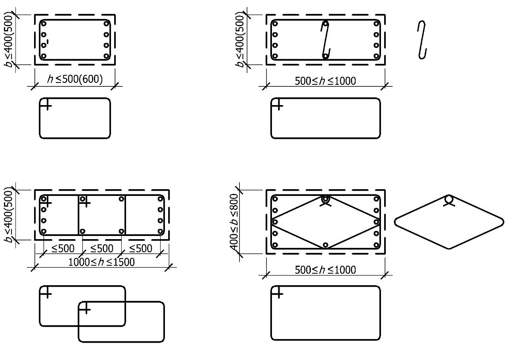
Примечание - В скобках приведены размеры граней при толщине защитного слоя до продольной арматуры не менее 25 мм.
Рисунок 7.22 - Примеры конструкций вязаных каркасов колонн, внецентренно сжатых в обеих плоскости
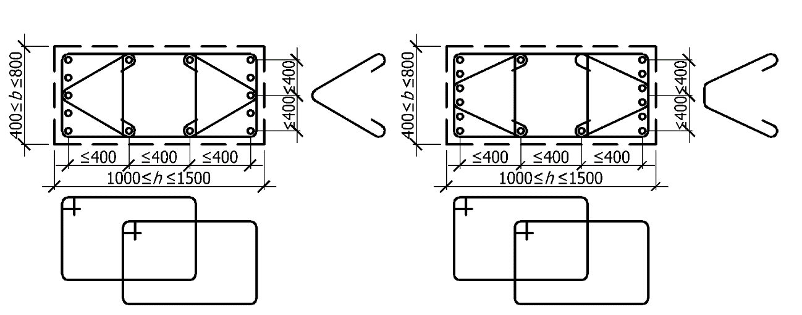
Примечание - В скобках приведены размеры граней при толщине защитного слоя до продольной арматуры не менее 25 мм.
где N р - растягивающая сила в ветви; h - высота сечения ветви;
Rbond - расчетное сопротивление сцепления, принимаемое равным 0,2 Rbt -при изготовлении колонны в металлической опалубке и 0,4 Rbt - при изготовлении колонны в деревянной опалубке; при этом расчетное сопротивление растяжения бетона Rbt принимается как для бетона замоноличивания.
При изготовлении стакана фундамента в металлической опалубке дополнительно проверяется прочность контакта бетона замоноличивания с бетоном стакана по условию
где расчетное сопротивление сцепления Rbond принимается равным 0,18 Rbt .
Если не выполняется условие (7.17), в колонне предусматриваются шпонки, расчет которых следует выполнять согласно приложению Е СП 63.13330.2012.
Для удобства распалубливания в шпонках предусматриваются скосы. Шпонки располагаются на расстоянии не менее 200 мм от верха стакана фундамента.
Размеры консолей
Рисунок 7.23 - Размеры подкрановой консоли ( h - не менее 200 мм и кратно 100 мм; l к - не менее 200 мм, кратно 50 мм до 400 мм и далее кратно 100 мм)
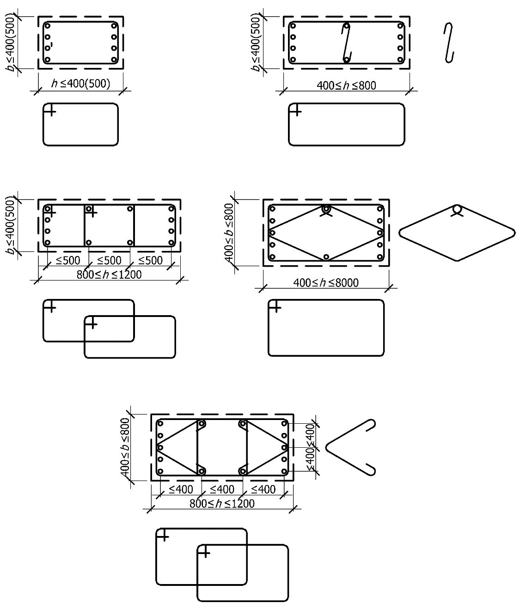
Угол наклона γ сжатой грани принимается равным 45°, высота свободного края консоли - не менее 1/3 высоты консоли в месте ее примыкания к колонне.
Рабочая высота h 0 подкрановой консоли при расположении крановой нагрузки в пределах вылета консоли (рисунок 7.24, а ), т. е. при с ≥ 0,5 b 1 определяется по формулам:
где Q - вертикальная нагрузка на консоль; b 1 - ширина площадки опирания подкрановой балки (для стальных балок с учетом стальной опорной плиты); b - ширина колонны и консоли;
- с - расстояние от оси кранового рельса до ближайшей грани подкрановой части колонны с учетом неблагоприятного его смещения вследствие неточности монтажа, принимаемого равным 3 см;
- γ b - коэффициент условий работы, учитывающий влияние динамичности и многократного приложения нагрузки и принимаемый равным 0,75 для кранов тяжелого режима работы и 1 - для кранов легкого и среднего режимов работы.
1 1 0,5(0,5 ), c b c = где знак плюс принимается при расположении оси подкрановой балки вне сечения подкрановой части колонны (рисунок 7.24, б ), а знак минус - внутри сечения подкрановой части (рисунок 7.24, в ) .
Рисунок 7.24 - Схемы приложения крановой нагрузки на консоль
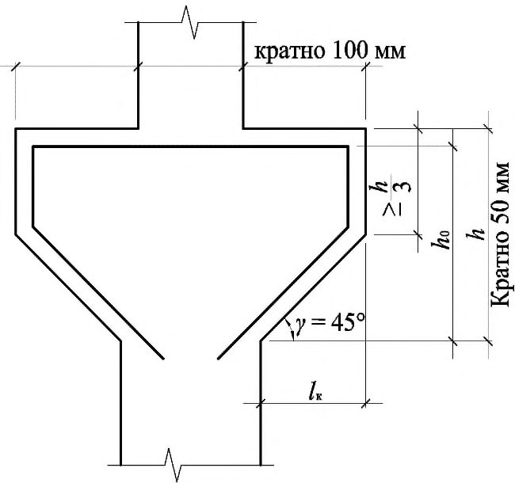
где Q - вертикальная нагрузка, передающаяся со стропильной конструкции на колонну; а - расстояние от наружной грани подкладки до грани консоли; оп б b Q l R b = -длина условной площадки опирания стропильной конструкции; b б - ширина стропильной конструкции или ширина колонны, если она меньше ширины стропильной конструкции; b - ширина колонны и консоли.
При расположении части нагрузки за пределами вылета консоли (рисунок 7.25, б ), т. е. при l оп > l к -а , рабочая высота консоли определяется по формулам (7.20) и (7.22):
при этом значение Q в формуле (7.22) следует умножить на значение ( l к -а )/ l оп .
Рисунок 7.25 - Схема приложения нагрузки от покрытия на консоль
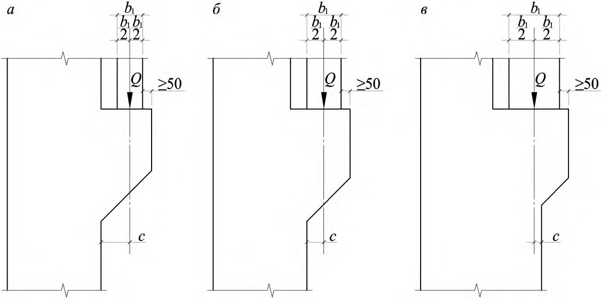
Армирование консолей
Консоли армируются продольной арматурой, окаймляющей консоль, отогнутыми стержнями и хомутами (наклонными или горизонтальными) или поперечными стержнями. В качестве продольной арматуры и отогнутых стержней обычно используется сталь тех классов, что и для продольной арматуры колонн, т. е. классов А400 и А500С. В качестве хомутов и поперечных стержней используется сталь класса A240.
Пространственные арматурные каркасы консолей образуются из плоских сварных каркасов, объединенных хомутами и поперечными стержнями. При сложном армировании консолей (большое число пересекающихся стержней, наличие закладных деталей для крепления связей в пределах консоли и т. п.) каркасы выполняются вязаными.
При высоте консоли в месте примыкания к колонне h ≤ 2,5 l к консоли армируются (кроме окаймляющей арматуры) наклонными хомутами (рисунок 7.26, а), при h > 2,5 l к - отогнутыми стержнями и горизонтальными хомутами (рисунок 7.26, б) , при h > 3,5 l к и P ≤ Rbtbh 0 -горизонтальными хомутами (рисунок 7.26, в). а - армирование наклонными хомутами; б - армирование отогнутыми стержнями и горизонтальными хомутами; в - армирование горизонтальными хомутами и поперечными стержнями
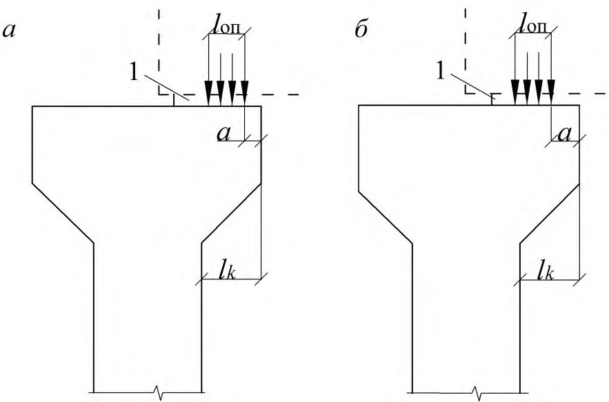
Рисунок 7.26 - Армирование консоли
СП 355.1325800.2017
Диаметр хомутов принимается как для сечения колонны, шаг хомутов не более 150 мм и не более h /4. Диаметр отогнутых стержней не более 1/15 длины отгиба l от (рисунок 7.26, б ) и не более 25 мм. Суммарное сечение отгибов и наклонных стержней, пересекающих верхнюю половину наклонной линии, которая соединяет крайние точки в пределах вылета консоли (рисунок 7.26, а , б ), принимается не менее 0,002 bh 0 (по условиям ограничения раскрытия трещин).
При односторонней консоли, расположенной на уровне верха колонны, продольная арматура консоли заводится в тело колонны, вниз от верхней грани, на расстояние не менее значения l an .
Стержни, окаймляющие консоль, а также нижние концы отогнутых стержней заводятся в толщу бетона колонны за пределами консоли на 150 мм (рисунок 7.26).
Элементы двухветвевых колонн
Переход от грани ветви к грани распорки устраивается плавным. Для обеспечения удобства распалубливания в «окнах», образуемых ветвями и распорками, со всех четырех сторон предусматриваются уклоны граней, равные 3 % - 4 %.
Все рядовые распорки принимаются одинаковой высоты, равной однойдвум высотам ветвей. Высота верхней распорки, в месте перехода сечения колонны от двухветвевого к прямоугольному, принимается не менее удвоенной высоты рядовой распорки.
Высота распорки, располагаемой в пределах стакана фундамента, принимается не менее 200 мм.
Ширина распорок принимается равной ширине ветви. При обеих сжатых ветвях армирование распорок принимается симметричным. При наличии растяжения в одной из ветвей колонны (в этом случае отрицательный момент в распорке значительно превышает положительный) продольное армирование распорок принимается несимметричным (рисунок 7.27).
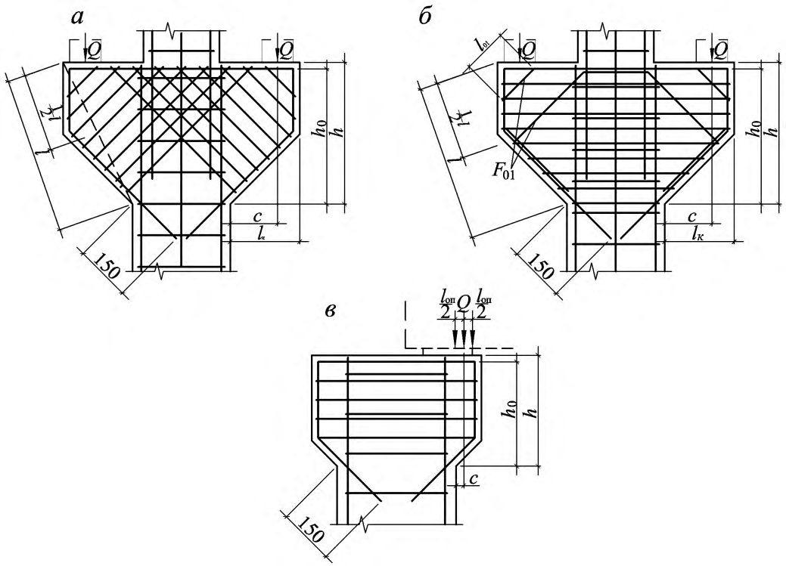
1 - каркас распорки; 2 - каркас ветви; 3 - дополнительные хомуты; 4 - дополнительные поперечные вертикальные стержни
Рисунок 7.27 - Пример армирования узла примыкания рядовой распорки к ветви двухветвевой колонны
Верхняя распорка армируется продольной рабочей арматурой, располагаемой по верхней и нижней граням распорки, горизонтальными и вертикальными хомутами (стержнями) и отгибами (рисунок 7.28). При устройстве в уровне верхней распорки подкрановых консолей учитываются требования, предъявляемые к подкрановым консолям.
Рисунок 7.28 - Армирование верхней распорки крановой двухветвевой колонны среднего ряда
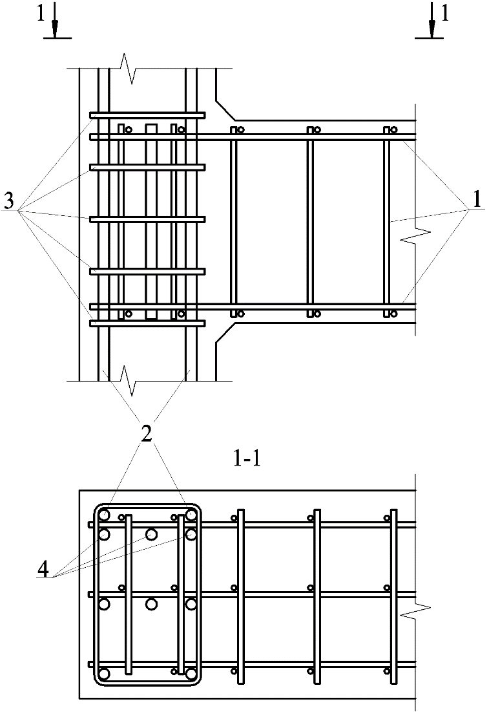
При действии вертикальной нагрузки и сосредоточенного момента усилия в верхней распорке определяются как в шарнирно опертой балке с пролетом, равным расстоянию между осями ветвей (рисунок 7.29). При действии горизонтальных нагрузок усилия в верхней распорке можно определять как в элементе рамы, считая эту распорку бесконечно жесткой. Нижняя продольная рабочая арматура верхней распорки принимается большей из расчета сечения, нормального к ее продольной оси, на действие положительного момента по грани верхнего прямоугольного участка колонны (рисунок 7.29, сечение I -I ) и из расчета сечения, наклонного к ее продольной оси, на действие наибольшего положительного момента в пределах расстояния между гранями ветвей (рисунок 7.29, сечение II-II). Верхняя продольная рабочая арматура подбирается по большему из отрицательных моментов, действующих по грани верхнего прямоугольного участка колонны и по оси ветви (рисунок 7.29, сечение II -II). При наличии в уровне распорки подкрановых консолей момент от крановой нагрузки учитывается дополнительно в соответствии с 7.3.46-7.3.49. Общее число верхней продольной арматуры распорки должно обеспечивать восприятие всей поперечной силы, действующей в верхнем участке колонны.
Шаг горизонтальных стержней или хомутов в верхней распорке принимается не более 150 мм и не более четверти высоты распорки. Шаг вертикальных стержней или хомутов - не более 200 мм. Суммарная площадь горизонтальных хомутов - не менее 0,001 bh 0 , где h 0 - рабочая высота распорки. Отгибы в распорке должны пересекать нижнюю половину наклонной линии, идущей от угла примыкания верхнего участка колонны к углу примыкания ветви (показаны пунктиром на рисунке 7.28); сечение
СП 355.1325800.2017 отгибов должно быть не менее 0,002 bh 0 . При Q ≤ Rbtbh 0 отгибы не предусматриваются. а - действие вертикальной силы и сосредоточенного момента; б - действие горизонтальной силы
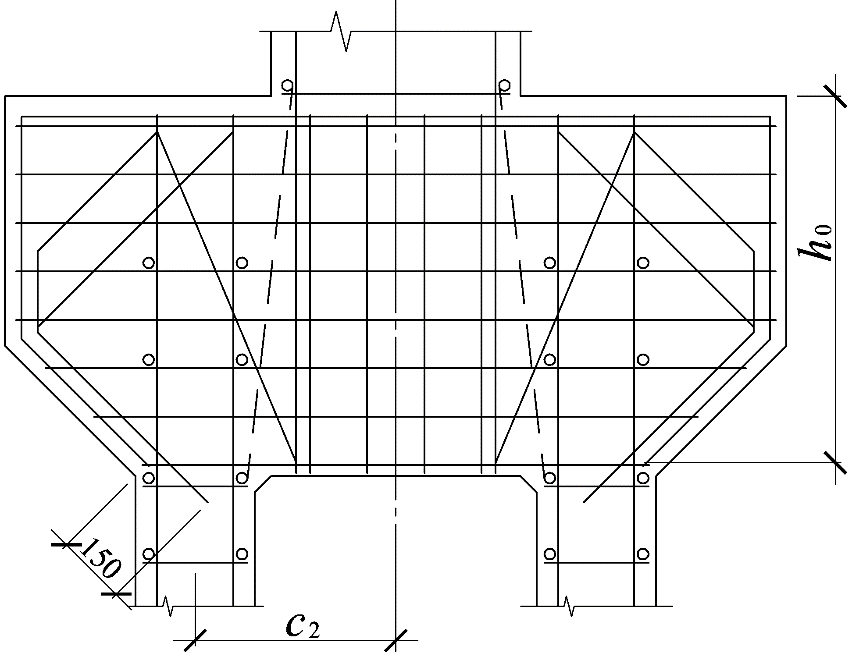
Рисунок 7.29 - Расчетные схемы и эпюры изгибающих моментов в верхних распорках двухветвевых колонн
Расчет и армирование участка колонны над проемом при h < 5 c 1 и Q ≥ 0,6 Rbtbh 0 производятся по аналогии с расчетом и армированием верхней распорки. Здесь h и h 0 - полная и рабочая высоты участка над проемом; c 1 -расстояние от вертикальной оси проема до внутренней грани ветви; Q -поперечная сила в участке над проемом, определяемая как для верхней распорки.
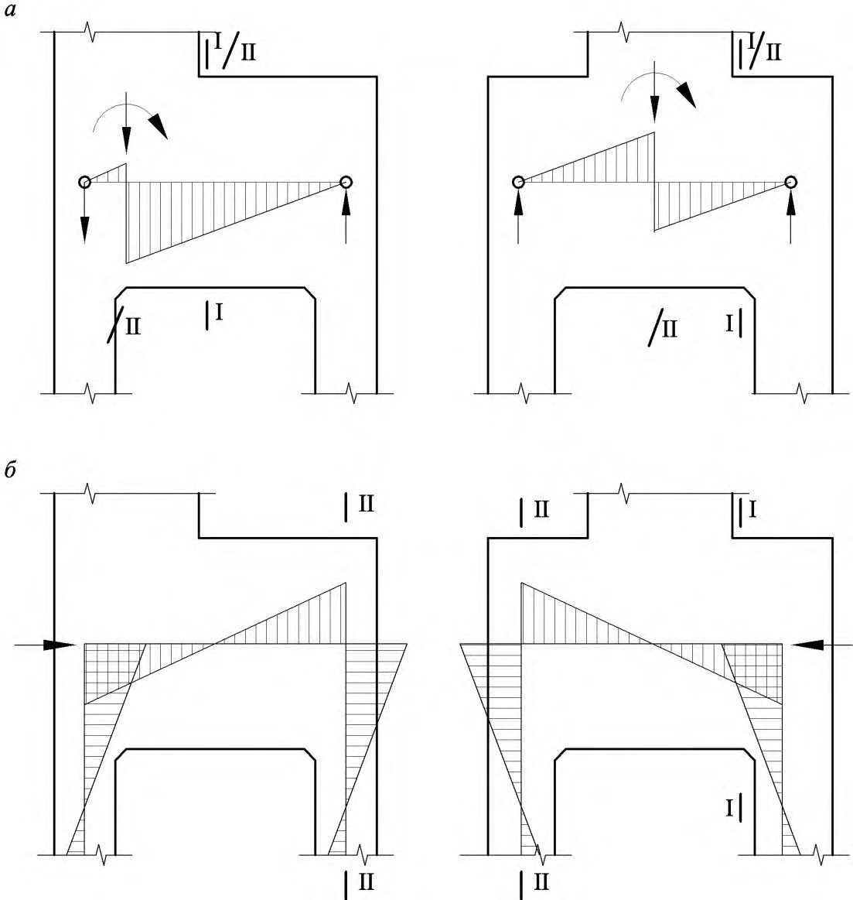
а - армирование ветви в месте стыка; б - стык ветви на монтаже (до замоноличивания); 1 - разделительный лист; 2 - болт; 3 - поддон; 4 - стык бетонных поверхностей
Рисунок 7.30 - Пример стыка ветви двухветвевой колонны
Закладные детали и сетки
Сетки проектируются сварными, с квадратными ячейками размером 5070 мм, но не более четверти меньшей стороны сечения колонны.
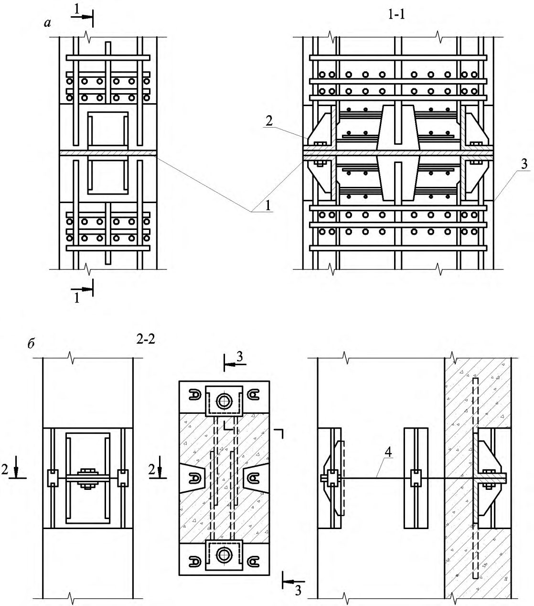
1 - закладные детали для крепления стен; 2 - закладные детали для крепления стальных консолей; 3 - закладная деталь для крепления стропильных конструкций; 4 - закладные детали для крепления подкрановых балок; 5 - закладные детали для крепления вертикальных связей
Рисунок 7.31 - Примеры расположения закладных деталей в колоннах (на схемах колонны крайнего ряда условно показаны только закладные детали для крепления стен (с разбивкой по высоте) и стальных консолей)
СП 355.1325800.2017
Закладные детали для крепления стропильных и подстропильных конструкций рассчитываются на усилия, полученные из статического расчета поперечной и продольной рам.
Стальные конструкции, опирающиеся на колонны, как правило, опорными вертикальными ребрами, передают вертикальную нагрузку в виде силы, сосредоточенной на малой площади. Для восприятия и передачи этой силы к горизонтальному листу закладной детали приваривается стальная полоса, расчет которой производится на реактивный отпор бетона колонны, принимаемый в виде нагрузки, равномерно распределенной по рабочей площади. В рабочую площадь включаются участки горизонтального листа закладной детали со стальной полосой, работа которых на упругий изгиб обеспечивает передачу нагрузки от конструкции покрытия на колонну. Требуемая рабочая площадь назначается по расчету на местное смятие. Стальные анкерные болты круглого сечения рассчитываются по резьбе на монтажные усилия. На концах анкерных болтов должны быть крюки. Длина заделки l аn анкерных болтов назначается как для растянутых стержней.
Закладные детали, располагаемые по верху подкрановой консоли, рассчитываются на усилия, полученные из статического расчета продольной рамы, с учетом коэффициента динамичности 1,2 для нагрузок от кранов; при неразрезных подкрановых балках учитывается отрывающая вертикальная опорная реакция балки.
Закладные детали колонн, располагаемые в уровне верха подкрановых балок, рассчитываются на сдвигающую или отрывающую силу от поперечного торможения крановой тележки.
При опирании стальных подкрановых балок расчет закладных деталей производится, как и при опирании стальных несущих конструкций покрытия.
В торцовых основных колоннах предусматриваются закладные детали в виде плоских элементов с анкерными стержнями; к этим закладным деталям привариваются промежуточные стальные конструктивные элементы каркаса торцовых стен. Закладные детали рассчитываются на отрывающую силу от действия ветровой нагрузки.
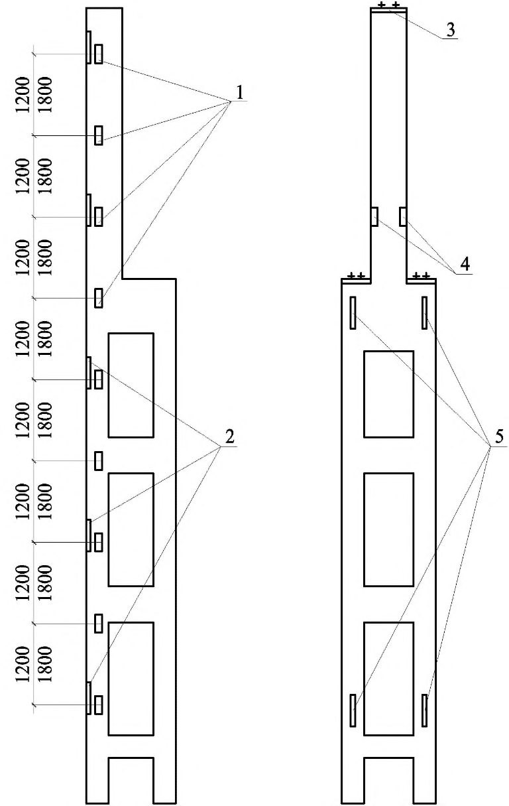
b - ширина панели; Q вес панели, опирающейся на опорную консоль; H - расстояние от оси закладной детали 4 до верха опорной консоли
1 - колонна; 2 - опорная консоль; 3 - стеновая панель; 4 - закладная деталь для крепления стеновой панели; 5 - связь панели с колонной;
Рисунок 7.32 -Схема передачи нагрузок от веса стеновых панелей на закладную деталь для крепления стен
В случаях, когда при эксплуатации здания возможны отколы граней колонны (при напольном транспорте и т. п.), углы колонн обрамляются закладными деталями из уголков, заанкеренных в теле колонны; при этом размер уголка, диаметр и шаг анкерующих стержней назначаются в зависимости от значений действующих нагрузок.
7.4Стропильные и подстропильные фермы Общие данные
- раскосные сегментные, для покрытий со скатной кровлей, с горизонтальным нижним и ломаным верхним поясом с прямоугольными участками (рисунок 7.33);
- безраскосные сегментные для покрытий со скатной (рисунок 7.34) и малоуклонной кровлей (рисунок 7.35) с круглым очертанием верхнего пояса.
Для малоуклонных кровель необходимо предусматривать дополнительные стойки над верхним поясом;
- полигональные для покрытий с малоуклонной кровлей. Фермы имеют параллельные пояса или малый уклон верхнего пояса (рисунок 7.36).
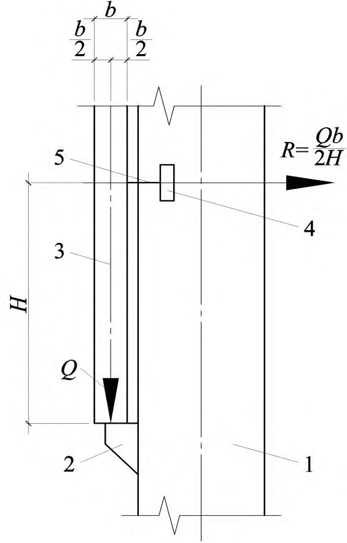
Рисунок 7.33 - Сегментные фермы для покрытий со скатной кровлей
Рисунок 7.34 - Безраскосные фермы для покрытий со скатной кровлей
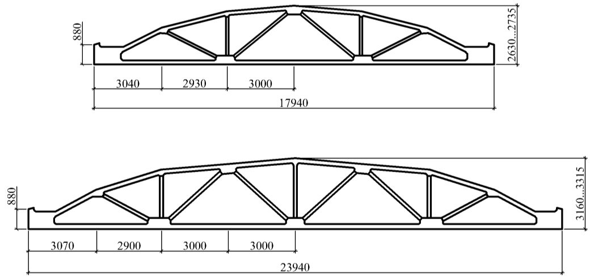
Рисунок 7.35 - Безраскосные фермы для покрытий с малоуклонной кровлей
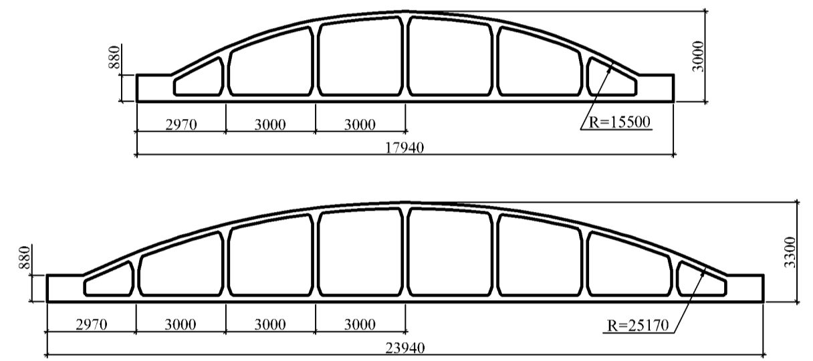
Рисунок 7.36 - Полигональные фермы для покрытий с малоуклонной кровлей
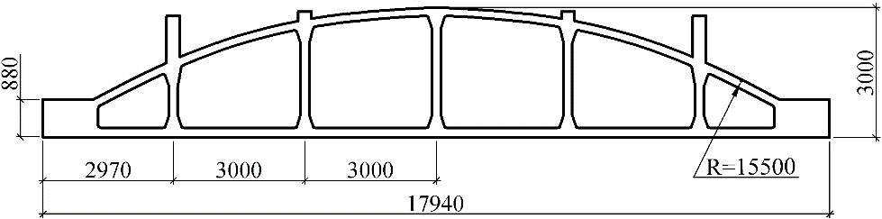
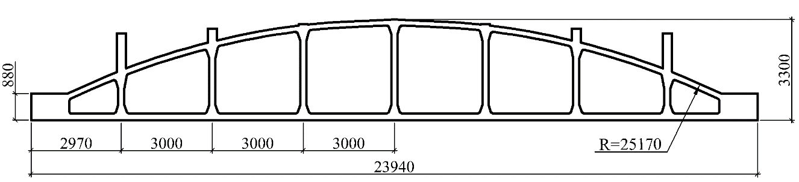
Типы конструктивных решений подстропильных ферм:
- раскосные для покрытий со скатной кровлей (рисунок 7.37). Плиты покрытия в плоскости подстропильных ферм следует опирать на их верхний пояс и дополнительные стойки, которые относятся к конструкции подстропильной фермы;
- безраскосные для покрытий с малоуклонной кровлей (рисунок 7.38) Плиты покрытия в плоскости подстропильной фермы следует опирать на ее верхний пояс и дополнительные стойки стропильных ферм.
Рисунок 7.37 - Подстропильные фермы для покрытий со скатной кровлей
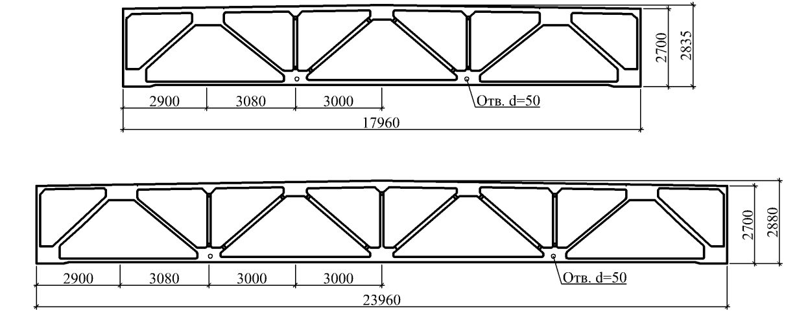
Рисунок 7.38 - Подстропильные фермы для покрытий с малоуклонной кровлей
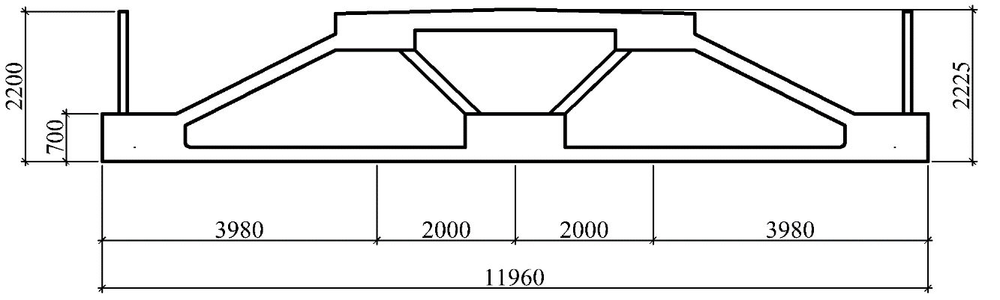
Сегментные раскосные фермы допускается проектировать из легкого бетона по ГОСТ 25820, класс бетона по прочности на сжатие не ниже В25.
- 600 мм - для ферм с параллельными поясами и полигональных ферм;
- 800 мм - для остальных ферм.
В фермах с закладной решеткой опорным и промежуточным узлам рекомендуется придавать трапецевидную форму, при этом все грани узла должны быть перпендикулярными к продольным осям (рисунок 7.39, б ). Оси элементов, сходящихся в узлах фермы, должны быть, как правило, сцентрированы.
Примечание - При необходимости унификации опалубочных форм допускается нарушение центрирования осей элементов в узлах. При этом дополнительно к расчету на внешние нагрузки и на усилия обжатия предварительно напряженной арматурой, фермы должны быть рассчитаны на изгибающий момент, возникающий от нарушения центрирования узлов. а - узлы ферм монолитного изготовления; б - узлы ферм с закладной решеткой
Рисунок 7.39 - Очертание узлов ферм
Расчет стропильных ферм
Примечания
1 При расчете по несущей способности верхних поясов раскосных ферм с внеузловой нагрузкой допускается определять изгибающие моменты приближенным способом, рассматривая верхний пояс как многопролетную неразрезную балку на непроседающих опорах (приложение Б). В случаях, когда в крайнем элементе верхнего пояса осевое усилие равно нулю, панель в расчет можно не включать, а остальные панели рассматриваются совместно с крайним сжатым раскосом.
2 При расчете нижних поясов раскосных ферм на появление трещин допускается определять изгибающие моменты приближенным способом, рассматривая нижний пояс как многопролетную неразрезную балку на упруго-проседающих опорах (приложение Б).
- 0,85 b red Е I - изгибная;
- b red Е F - осевая. для элементов решетки раскосных ферм
- 0,5 b red Е I - изгибная;
- ψ s s s Е A - осевая (при этом коэффициентψ s , учитывающий работу бетона между трещинами, допускается принимать равным ψ s = 1); для элементов безраскосных ферм жесткость элементов определяется по бетонному сечению без учета арматуры. При этом увеличение жесткости стоек за счет вутов может не учитываться.
Примечание - Жесткость сжатых и предварительно напряженных элементов стропильных ферм также может приниматься по бетонному сечению без учета арматуры; для узловых участков при отношении 0,1 узл э I I изгибная и осевая жесткости принимаются бесконечно большими;
- 0,85 b red Е I - изгибная;
- b red Е F - осевая, где b Е - модуль упругости бетона; s Е - модуль упругости арматуры; red F - приведенная площадь поперечного сечения; red I - момент инерции приведенного поперечного сечения; s A - площадь поперечного сечения арматуры; э I
- максимальный момент инерции поперечного сечения примыкающих к узлу элементов;
I узл - момент инерции поперечного сечения узла.
Примечание - Высота сечения поясов ферм на участке опорных узлов может условно приниматься равной половине высоты опорного узла, но не менее высоты пояса.
При расчете на прочность изгибающие моменты в верхнем поясе безраскосных ферм могут быть перераспределены до 30 %, в нижнем - до 50 %. В элементах решетки снижение моментов производить не рекомендуется в связи с необходимостью ограничения ширины раскрытия трещин.
При расчете ферм с криволинейным верхним поясом очертание панели криволинейного пояса может быть заменено ломаным, но не менее, чем с двумя прямолинейными участками.
Расчет элементов ферм
где μ - коэффициент приведения длины; l - расстояние по оси между центрами примыкающих к элементу узлов.
Коэффициент μ принимается по формуле
где l в - суммарная длина вутов в элементе (рисунок 7.40), принимаемая равной:
- сумме расстояний от центров узлов до точек вхождения элементов решетки в вут - для верхнего пояса;
- сумме расстояний от центров, примыкающих узлов до грани вута - для элементов решетки; h в - высота вута; h п - высота пояса; п в h h - принимается не более 2, а для элементов решетки всегда равным 2;
Рисунок 7.40 - Схемы узлов ферм
для центрально сжатых элементов верхнего пояса и решетки ферм из плоскости
- бесфонарные участки, элементы решетки и участки под фонарем шириной 6 м
где l - расстояние по оси между центрами узла, в котором устанавливается крайняя нога фонаря и узла, в котором устанавливается распорка; для элементов верхнего пояса ферм в плоскости при наличии внеузловой нагрузки
где μ и l - принимаются как для центрально сжатых элементов, коэффициент β при эксцентриситете l 0 < 3 см принимается равным 1, а для l 0 ≥ 3 см равным 0,9; для верхнего пояса арочных безраскосных ферм для плоских (малоуклонных) кровель - в соответствии с приложением В; в остальных случаях l 0 = l .
Во всех случаях l -расстояние, см, по оси между центрами примыкающих к рассчитываемому элементу узлов (при расчете в плоскости фермы) или между центрами закрепленных узлов (при расчете из плоскости фермы).
СП 355.1325800.2017
Поперечная арматура опорного узла рассчитывается из условий обеспечения прочности заанкеривания арматуры и прочности по наклонному сечению.
Вычисление прогибов безраскосных ферм следует проводить как для многократно статически неопределимой системы с учетом нормальных сил и изгибающих моментов, действующих в элементах ферм.
Конструирование ферм
1 - окаймляющая арматура каркасов; 2 - поперечная арматура; 3 - арматура растянутого раскоса; 4 - арматура, связывающая каркасы
Рисунок 7.41 - Схема армирования узлов ферм
Минимальный диаметр арматуры растянутых элементов решетки - 8 мм. 7.4.39 Узлы ферм (кроме промежуточных узлов, к которым подходит один элемент решетки) армируются пространственными каркасами, которые образуются за счет перегиба поперечных стержней плоских каркасов. Допускается образовывать пространственные каркасы узлов соединением плоских каркасов шпильками, гнутыми сетками или иными подобными арматурными элементами. Окаймляющие стержни узлов рекомендуется выполнять цельногнутыми, стыкуя их в верхней зоне опорных и промежуточных узлов верхнего пояса и в нижней зоне промежуточных узлов нижнего пояса.
Диаметр окаймляющих стержней промежуточных узлов должен быть не менее 10 мм при усилии в растянутых элементах решетки до 30 т, не менее 12 мм - при усилии до 45 т и не менее 14 мм - при усилии до 60 т.
Диаметр окаймляющих стержней опорных узлов должен быть не менее 10 мм. При этом площадь продольных верхних стержней (рисунок 7.42) должна быть не менее 0,05 % площади поперечного сечения опорного узла.
При диаметре продольных нижних стержней каркасов опорных узлов, равном или больше 14 мм, на концах стержней у торца узла рекомендуется создавать дополнительные анкеры в виде петель или высаженных головок.
Если расстояние между продольными стержнями каркасов опорных узлов в плоскости фермы больше 500 мм, необходима установка дополнительных продольных стержней диаметром 10 мм.
Рекомендуемый шаг поперечной арматуры - 100 мм.
Косвенное армирование опорных узлов анкерными стержнями закладных деталей, хомутами и дополнительными сетками рекомендуется выполнять в соответствии с рисунком 7.42. При этом дополнительные сетки устанавливаются с шагом 50-100 мм на длине не менее 10 диаметров продольной арматуры нижнего пояса и не менее 200 мм от торца опорного узла. Диаметр стержней сеток должен быть не менее 6 мм и не менее 0,25 диаметра продольной арматуры нижнего пояса.
Примечание - При номинальном диаметре предварительно напряженных прядей или канатов более 15 мм диаметр стержней сеток должен быть не менее 8 мм.
1 - продольные верхние стержни каркасов; 2 - сетки косвенного армирования; 3 -анкерные стержни закладных деталей
Рисунок 7.42 - Схема армирования опорных узлов
Петли могут привариваться контактно-стыковой или электродуговой сваркой. Длина сварного шва должна быть 6 d - при односторонней приварке и 3 d - при двухсторонней.
Коротыши изготовляются длиной 4 d из стали класса А400 или А500С того же диаметра, что и основная арматура. Длина сварного шва при односторонней приварке 6 d , при двухсторонней - 3 d .
Рисунок 7.43 - Схема узла безраскосной фермы
Узлы примыкания стоек к поясам безраскосных ферм должны армироваться дополнительной конструктивной арматурой в виде сеток, выполняемых из стали класса A240 или B500 диаметром 5-6 мм.
Примечание - При соответствующем обосновании может быть допущено и иное размещение арматуры, но минимальные расстояния должны быть не менее указанных в 10.3.5 СП 63.13330.2012.
7.5Стропильные балки
- односкатные;
- с параллельными поясами;
- двускатные (двутавровые и решетчатые).
Двускатные стропильные балки двутаврового сечения
Рисунок 7.44 - Двускатные стропильные балки двутаврового сечения
СП 355.1325800.2017 где L - длина балки; i - уклон;
Nа - усилие в растянутой арматуре; g значение равномерно распределенной нагрузки.
Из формулы видно, что положение наиболее опасного сечения зависит от усилия в растянутой арматуре, поэтому следует воспользоваться методом последовательных приближений. За начальное приближение можно принять x = (0,35…0,4) L . В этом сечении определяется требуемое значение Nа , по которому находят новое значение х . Процесс следует повторять до получения необходимой точности.
Необходимо выполнять расчеты по трещиностойкости, прогибам, а также расчеты прочности и трещиностойкости на усилия, возникающие при изготовлении, транспортировании и монтаже, и, в необходимых случаях, корректировку принятых размеров поперечного сечения и числа арматуры для удовлетворения этим требованиям.
1 - напрягаемая арматура; 2,3,4,5 - арматурный каркас; 6 - сетка косвенного армирования; 7 закладная деталь
Рисунок 7.45 - Схема армирования опорной части двускатной стропильной балки
Двускатные стропильные решетчатые балки
Рисунок 7.46 - Двускатные стропильные решетчатые балки
На стадии разрушения пояса решетчатых балок работают как нормальные сечения сплошных балок, поэтому допускается нормальные сечения решетчатых балок рассчитывать как нормальные сечения сплошных балок, ослабленные отверстиями.
1 напрягаемая арматура; 2-9 - арматурный каркас; 10 - сетки косвенного армирования; 11 - закладная деталь
Рисунок 7.47 - Схема армирования двускатной решетчатой балки длиной 18 м
Стропильные балки для покрытий с плоской и малоуклонной кровлей
Рисунок 7.48 - Стропильные балки для покрытий с плоской и малоуклонной кровлей
1 - напрягаемая арматура; 2,3,4,5 - арматурный каркас; 6 - сетка косвенного армирования; 7 закладная деталь
Рисунок 7.49 - Схема армирования опорной части стропильной балки для покрытий с плоской и малоуклонной кровлей
7.6Плиты покрытий
Общие данные
Рисунок 7.50 - Опалубочный чертеж плиты размерами 12×3 м
Расчет плит
- расчет по прочности нормальных сечений;
- расчет по прочности наклонных к продольной оси плиты сечений:
- а) на действие изгибающего момента;
- б) на действие поперечной силы;
- расчет на прочность концевых участков плиты при воздействии сосредоточенных усилий от натянутой арматуры (для предварительно напряженных плит);
- расчет по образованию трещин предварительно напряженных элементов:
- а) в нормальных сечениях;
- б) в наклонных сечениях к продольной оси элемента сечениях;
- расчет по деформациям;
- расчет по раскрытию трещин:
- а) нормальных к продольной оси элемента;
- б) наклонных к продольной оси элемента; для поперечных (торцевых) ребер:
- расчет по прочности нормальных сечений;
- расчет по прочности наклонных к продольной оси элемента сечений:
- а) на действие изгибающего момента;
- б) на действие поперечной силы;
- расчет по деформациям;
- расчет по раскрытию трещин:
- а) нормальных к продольной оси элемента;
- б) наклонных к продольной оси элемента; для полок плит:
- расчет по прочности;
- расчет по деформациям.
СП 355.1325800.2017
При проектировании плит шириной 3 м и, в частности, плит длиной 12 м, поперечные ребра рассчитывают при упрощенном расчете как шарнирно опертые балки без учета их защемления в продольных ребрах. При этом принимается в расчет пролет ребра в свету. Среднее поперечное ребро плит размерами 12×3 м рассчитывается из условия разрушения полки по «конверту» (по линиям биссектрис углов) в поле плиты размерами 6×3 м. При этом в продольном ребре учитывается влияние крутящих моментов от поперечных ребер.
Полки плит при соотношении длин сторон l 2 : l 1 < 1,5, работающих в двух направлениях, рассчитываются при упрощенном расчете как защемленные по контуру плиты. Армировать их рекомендуется сетками с арматурой, одинаковой в обоих направлениях.
Полки плит при соотношении l 2 : l 1 > 1,5, работающие преимущественно в одном направлении, рассчитываются как неразрезные балочные и армируются сетками с рабочей арматурой в одном направлении. В отдельных обоснованных случаях, полки плит допускается рассчитывать, как защемленные по контуру плиты, и при соотношениях 2 1 : 1,5 l l , но менее 2.
СП 355.1325800.2017
Армирование плит
Дополнительная анкеровка напрягаемой стержневой арматуры требуется при сравнительно больших диаметрах арматуры повышенных классов.
Дополнительная анкеровка может выполняться путем высадки головок на концах обжимных шайб и гильз (термически упрочненные стали), контактной приваркой шайб (к свариваемым сталям).
Рисунок 7.51 - Схема армирования плиты размерами 12×3 м
7.7Подкрановые балки
Общие данные
- торцевые - у торцевых стен;
- рядовые;
- температурные - у температурных швов.
Расчет подкрановых балок
Рисунок 7.52 - Расчетные сечения подкрановой балки
Конструирование подкрановых балок
а - общий вид подкрановой балки; б - армирование напрягаемой проволочной арматурой; в - то же, стержневой арматурой
Рисунок 7.53 - Конструкция предварительно напряженной подкрановой балки пролетом 12 м
СП 355.1325800.2017 а - крепление подкрановой балки к колонне; б - крепление рельса к подкрановой балке; 1 - ребристые планки 100×12; 2 - закладная деталь подкрановой балки; 3 анкеры, выпущенные из колонны; 4 - лапки-прижим; 5 - упругие прокладки; 6 - закладные детали колонны толщиной 8 мм
Рисунок 7.54 - Детали крепления
7.8Фонари
7.9Наружные ограждающие конструкции
- на несущие;
- самонесущие;
- ненесущие.
- на однослойные;
- двухслойные;
- трехслойные.
АПриложение А. Упрощенные схемы расчета каркасов
А.1 На стадии вариантного проектирования для выбора рациональной конструктивной схемы каркаса расчетную схему здания допускается принимать в виде продольных и поперечных рам, состоящих из системы колонн, жестко защемленных понизу и шарнирно соединенных поверху жестким диском покрытия, а при наличии мостовых кранов дополнительно связанных вдоль продольных рядов колонн подкрановыми балками.
Расчетные схемы рам приведены на рисунке А.1. а поперечная рама; б -продольная рама при отсутствии подкрановых балок; в -продольная рама при наличии подкрановых балок
Рисунок А.1 - Расчетные схемы рам
А.2 При расчете рам продольные деформации и деформации сдвига стержней не учитываются ввиду их незначительности, за исключением случаев учета вынужденных перемещений от температурных и подобных им воздействий, когда продольные деформации стропильных конструкций могут быть значительны, а также случаев расчета двухветвевых колонн, для которых продольные деформации ветвей - определяющие при нахождении перемещений.
А.3 При действии вынужденных перемещений от температурных и подобных им воздействий следует учитывать деформативность (податливость) стропильных конструкций, характеризуемую значением деформаций нижней грани конструктивного элемента, образующего
СП 355.1325800.2017 стропильную конструкцию (для разрезных балок), или самого элемента (пояс фермы, неразрезные балки) от действия единичной силы по направлению грани.
А.4 При расчете поперечных рам необходимо учитывать пространственную работу каркаса в пределах температурного блока, обусловленную жесткостью диска покрытия, которая зависит от конструктивной схемы покрытия. При покрытии из крупноразмерных железобетонных плит с замоноличенными швами, приваренных к несущим конструкциям, диск покрытия бескрановых зданий, а также с мостовыми кранами грузоподъемностью не более 50 т считается бесконечно жестким. При кранах большей грузоподъемности горизонтальные силы в диске покрытия могут превзойти несущую способность сопряжений плит со стропильными конструкциями. В этом случае следует принимать другую схему приварки плит, и швы между плитами заполняются упругими прокладками, что резко уменьшает жесткость диска покрытия из плит и снижает усилия в сопряжениях плит со стропильными конструкциями.
А.5 Если диск покрытия из железобетонных плит не может рассматриваться бесконечно жестким или он образован из других элементов, то его жесткость следует принимать по результатам эксперимента. При отсутствии данных учитывается только жесткость горизонтальных связевых ферм. Момент инерции связевых ферм следует определять, как для балки с бесконечно тонкой стенкой, наличие решетки и вид монтажных соединений учитывается коэффициентом 0,8 - при сварных и клепаных и 0,6 - при болтовых соединениях.
А.6 При учете пространственной работы каркаса покрытие следует рассматривать как горизонтальную неразрезную балку или систему горизонтальных балок, опирающихся на упруго проседающие опоры в виде поперечных и продольных плоских рам.
А.7 Высоту колонн следует принимать при расчете поперечных рам равной расстоянию от верха подколонника фундамента до низа стропильных конструкций (независимо от наличия подстропильных конструкций), а при расчете продольных рам - равной расстоянию от верха подколонника фундамента до низа стропильных конструкций (при наличии распорок в уровне верха колонн), до низа надколонных продольных ребер плит покрытия (при отсутствии распорок в уровне верха колонн) или до низа подстропильных конструкций. При заглублении подошвы фундамента более чем на 3 м высоту колонн следует принимать в зависимости от конструктивного решения подземной части здания. Если при этом соединение колонны с фундаментом производится на уровне пола, т. е. заглубление происходит за счет стаканной части, то при наличии бетонной подготовки под полы или железобетонного перекрытия над подвалом высота колонны отсчитывается от уровня верха подколонника фундамента или перекрытия над подвалом.
Допускается также отсчитывать высоту колонны от верха подколонника фундамента, когда погрешность от неучета работы стаканной части на
СП 355.1325800.2017 значение перемещения верха колонны при действии горизонтальной силы, приложенной в уровне верха колонны, не превышает 5 %. Это условие приближенно записывается в виде
где Н к - расстояние от верха подколонника фундамента до верха колонны;
Н с - высота стаканной части;
I к -момент инерции сечения колонны в месте примыкания к фундаменту;
I с - момент инерции прямоугольного сечения подколонника.
А.8 Если опорные части железобетонных подстропильных или стропильных конструкций - продолжение колонн, их жесткость следует принимать равной жесткости примыкающих участков колонн.
Расчет поперечной рамы
А.9 Упрощенный расчет выполняют по недеформированной схеме как упругой линейно деформируемой системы без учета влияния трещин на жесткость колонн. При этом влияние продольного изгиба колонн учитывается при подборе сечений с помощью коэффициента η. При учете вынужденных перемещений жесткость колонн следует принимать как при длительном действии нагрузок с учетом, в необходимых случаях, наличия трещин. Расчет рам производится методом перемещений, за исключением случая, когда учитывается податливость ригелей (стропильных конструкций) рамы; тогда расчет удобнее производить методом сил.
А.10 В результате статического расчета определяется смещение рамы, после чего вычисляются реакции опор колонн и находятся усилия в сечениях колонн.
Усилия в сечениях колонн определяются раздельно, как в элементах поперечной и продольной рамы, после чего расчет сечений колонн производится на совместное действие этих усилий. Такой подход, предполагающий применение принципа независимости действия сил, правомерен лишь для случая работы колонн как физически линейно деформируемых элементов, т. е. элементов с постоянной жесткостью, а для расчета каркасов по деформированной схеме применяется для его упрощения, так как в этом случае следовало бы учитывать для колонн влияние усилий в одной плоскости на жесткость в другой плоскости.
А.11 При бесконечно жестком диске покрытия для зданий без перепадов высоты в пределах температурного блока:
- ветровая нагрузка между поперечными рамами распределяется пропорционально их жесткостям, а между продольными рамами -пропорционально грузовым площадям;
- смещение каркаса от крановой нагрузки и нагрузки от подвесного транспорта допускается не учитывать, за исключением однопролетных
СП 355.1325800.2017 зданий с мостовыми кранами грузоподъемностью более 30 т и двухпролетных зданий с мостовыми кранами грузоподъемностью более 50 т;
- смещение каркаса при действии нагрузок от веса покрытия и снега допускается не учитывать, если значения пролетов отличаются не более, чем на 6 м;
- усилия в колоннах поперечных рам у торца здания и у температурного шва допускается не определять и сечения этих колонн не проверять, если они приняты такими же, как и соответствующие колонны примыкающей рядовой поперечной рамы, и вертикальная нагрузка на эти колонны не превышает 75 % вертикальной нагрузки на соответствующие колонны рядовой рамы.
А.12 Температурные перемещения и удлинение нижних граней несущих конструкций покрытия допускается не учитывать при температуре наиболее холодной пятидневки района строительства выше минус 40 % и расстояниях между температурными швами не более определенных в соответствии с 6.27 СП 27.13330.2017.
А.13 Навесные стеновые панели, устанавливаемые на приваренные к колоннам опорные консоли без возможности перемещения в плоскости стены независимо от колонн, следует рассматривать, при расчете продольных рам на температурные перемещения и удлинение нижних граней конструкций, как ригели продольной рамы, шарнирно соединенные с колоннами.
А.14 При расчете рам на температурные перемещения, если число пролетов или шагов более 6, рекомендуется учитывать упругую податливость ригелей рамы.
А.15 Жесткость железобетонных конструкций, при определении их податливости, следует принимать соответствующей длительному действию нагрузки, за исключением случая, когда стропильная конструкция предварительно напряжена и на нее действует растягивающая сила. В этом случае податливость следует определять при жесткости, соответствующей кратковременному действию нагрузки.
А.16 Расчетная длина l 0 сборных железобетонных колонн зданий с мостовыми кранами для подкрановой (нижней) части и надкрановой (верхней) части и без мостовых кранов в плоскости поперечной рамы и из плоскости поперечной рамы различная и ее следует определять согласно таблице 7.1.
А.17 Определение усилий в стойках рамы производится в следующем порядке:
- по заданным размерам сечений колонн определяется их жесткость как для бетонных сечений в предположении упругой работы материала;
- верхним концам колонн задается смещение Δ1 = 1 и по формуле таблицы А.1 находится реакция R Δ i , каждой колонны и рамы в целом
где n - число колонн поперечной рамы;
- по формулам таблицы А.1 определяются реакции R верхних опор стоек рамы в основной системе метода перемещении и суммарная реакция в уровне верха колонн для нагружения каждого вида;
- для каждого из нагружений (постоянная, снеговая, ветровая, крановая нагрузка) составляется каноническое уравнение метода перемещений, выражающее равенство нулю усилий во введенной (фиктивной) связи
- находится значение Δ1, где csp -коэффициент, учитывающий пространственную работу каркаса здания.
А.18 При действии на температурный блок постоянной, снеговой и ветровой нагрузок все рамы одинаково вовлекаются в работу, пространственный характер деформиривания не проявляется и поэтому принимается csp = 1. Крановая нагрузка приложена лишь к нескольким рамам блока, но благодаря жесткому диску покрытия в работу включаются все остальные рамы. Именно в этом и проявляется пространственная работа блока рам. Значение csp для случая действия на раму крановой (локально приложенной) нагрузки может быть найдено по приближенной формуле
где n - общее число поперечников в температурном блоке;
- ai - расстояние от оси симметрии блока до каждого из поперечников, а -то же, для второй от торца блока поперечной рамы (наиболее нагруженной);
- m = n /2, когда число поперечных рам в температурном блоке четное и m = ( n -1)/2, когда число поперечных рам в температурном блоке нечетное;
- для каждой стойки при данном нагружении упругая реакция в уровне верха вычисляется по формуле
- определяются изгибающие моменты M , продольные N и поперечные Q силы в каждой колонне как в консольной стойке от действия упругой реакции Rie и внешних нагрузок.
А.19 Для подбора сечений колонн необходимо определить наибольшие возможные усилия в четырех сечениях:
- сечение у верха колонны;
- сечение непосредственно выше подкрановой консоли;
- сечение непосредственно ниже подкрановой консоли;
- сечение в заделке колонны.
А.20 При определении числа кратковременных нагрузок вертикальная и горизонтальная нагрузки от всех подвесных или мостовых кранов принимаются за одну кратковременную нагрузку.
А.21 Нагрузка от веса покрытия, снега и т. п. принимается действующей на нижележащие конструкции не только в виде вертикальных
СП 355.1325800.2017 сосредоточенных сил, но и в виде удлинения нижних граней соответствующих несущих конструкций покрытия, учитываемого при расчете аналогично перемещению от температурного воздействия.
А.22 При составлении сочетаний рассматриваются наиболее неблагоприятные сочетания нагрузок, устанавливаемые из сопоставления физически возможных вариантов одновременного действия различных нагрузок. При этом временные нагрузки могут отсутствовать или менять схему приложения.
А.23 Для расчета сочетаний усилий в сечениях колонн от разных нагрузок, а также усилий, передаваемых с колонны на фундамент, следует рассматривать следующие сочетания усилий: наибольший положительный момент M max и соответствующая ему продольная сила; наибольший отрицательный момент M min и соответствующая ему продольная сила; наибольшая продольная сила N max и соответствующий ей изгибающий момент.
А.24 Значения изгибающих моментов и поперечных сил в крановой нагрузке приняты со знаком «±», т. к. торможение тележек крана может осуществляться в обе стороны. Учитывая, что колонны находятся в условиях внецентренного сжатия, в сочетание усилий N max включены и те нагрузки, которые увеличивают эксцентриситет продольной силы.
Таблица А.1 Реакции верхних опор стоек рамы и суммарная реакция верха колонны от каждого вида загружения
БПриложение Б. Определение изгибающих моментов в верхних и нижних поясах ферм
Б.1Определение изгибающих моментов в верхних поясах стропильных ферм при воздействии внеузловой нагрузки (приближенный способ)
Б.1.1 При расчете раскосных ферм с прямолинейным (полигональным) очертанием верхнего пояса на внеузловую нагрузку и ферм с криволинейным очертанием верхнего пояса как на узловую, так и внеузловую нагрузки, изгибающие моменты в верхнем поясе определяются приближенно, как в неразрезных многопролетных балках на непроседающих опорах (рисунок Б.1). а - схема верхнего пояса (нагрузка не показана); б - схема замены влияния выгиба условной эквивалентной нагрузкой; в - расчетная схема
Рисунок Б.1 - Схема расчета верхнего пояса арочной фермы
Б.1.2 Значение изгибающего момента M оп в n -й панели верхнего пояса с учетом эксцентриситета нормальной силы (от выгиба панелей верхнего пояса) определяется по формуле
где Mn - изгибающий момент от местной (внеузловой) нагрузки в n -й панели верхнего пояса;
Nn - нормальная сила в n -й панели верхнего пояса, соответствующая Mn ; l n - выгиб (стрела подъема) n -й панели верхнего пояса, равный длине перпендикуляра, восстановленного из середины прямой, соединяющей узлы верхнего пояса фермы в n -й панели.
Б.1.3 Для учета влияния выгибов на значение изгибающих моментов многопролетную балку криволинейного очертания (рисунок Б.1, а ) следует заменить балкой, состоящей из прямолинейных участков (пролетов), на которые действует эквивалентная равномерно распределенная нагрузка, вызывающая изгибающие моменты М выг, равные по значению моментам от нормальных сил, приложенных эксцентрично (с учетом выгибов панелей верхнего пояса) (рисунок Б.1, б )
Значение эквивалентной равномерно распределенной нагрузки для n -й панели верхнего пояса определяется по формуле
где l n - проекция n -й панели верхнего пояса на горизонтальную ось; α n - угол наклона прямой, соединяющей узлы верхнего пояса в n -й панели к горизонтали.
Б.1.4 При статическом расчете допускается ряд упрощений: в качестве расчетной схемы неразрезной конструкции использовать проекцию верхнего пояса на горизонтальную ось (рисунок Б.1, в ); если отдельные панели верхнего пояса отличаются по длине не более, чем на 10 %, пояс допускается рассматривать как неразрезную балку с равными пролетами; учитывать только вертикальную составляющую равномерно распределенной нагрузки, горизонтальной составляющей пренебречь из-за ее незначительности; опорный узел условно принимать шарнирным.
Изгибающие моменты от различных комбинаций нагрузок в неразрезной балке определяются обычными методами строительной механики.
Б.2Определение изгибающих моментов в нижних поясах ферм (приближенный способ)
Б.2.1 При определении изгибающих моментов для расчета ферм по предельному состоянию второй группы расчетная схема нижнего пояса подстропильных ферм принимается в виде неразрезной балки с жестко закрепленными концами (рисунок Б.2, а ), а стропильных ферм, без сосредоточенных нагрузок, приложенных к опорным узлам -в виде неразрезной балки на упруго проседающих промежуточных опорах с шарнирным закреплением на концах (рисунок Б.2, б ).
- Б.2.2 В качестве основной системы при этом используется многопролетная неразрезная балка, неизвестные в которой - изгибающие моменты, действующие в нижнем поясе у узлов фермы (рисунок Б.2, в , г ).
- Б.2.3 При симметричном расположении узлов нижнего пояса относительно середины пролета фермы число неизвестных в канонических уравнениях сокращается. При нечетном числе панелей нижнего пояса система уравнений принимает следующий вид:
где Mn - изгибающий момент в нижнем поясе в узле n , примыкающем к средней панели. а - расчетная схема для подстропильной фермы; б - то же, стропильной; в - основные системы для подстропильной фермы; г - то же, для стропильной
Рисунок Б.2 - Расчетные схемы и основные системы при расчете трещиностойкости нижнего пояса
- Б.2.4 При четном числе панелей нижнего пояса система канонических уравнений имеет вид:
СП 355.1325800.2017 где Mn - изгибающий момент в нижнем поясе в узле n , расположенном в середине пролета.
Б.2.5 Если сечение нижнего пояса по длине фермы постоянно, коэффициенты при неизвестном определяют по формулам:
Б.2.6 Грузовыми членами являются σ B -кратные взаимные углы поворота панелей нижнего пояса:
где k l и 1 k l + - длины панелей нижнего пояса, примыкающих к узлу К ;
1 k f -, k f и 1 k f + - прогибы соответствующих узлов нижнего пояса от нагрузки, для которых расчитывается трещиностойкость,
B - изгибная жесткость нижнего пояса фермы, определяемая в соответствии с 7.4.25.
Б.2.7 Определение прогибов узлов производится по формуле Мора или с помощью диаграммы перемещений, дающей одновременно прогибы всех узлов фермы. При этом осевые деформации элементов фермы определяются по формуле
где Ni - осевые усилия в элементах ферм;
EFi - осевые жесткости элементов фермы; l i - длина элементов фермы между центрами узлов.
Б.2.8 Продольные силы в элементах определяются как в шарнирностержневой системе. По найденным значениям продольной силы и изгибающего момента, полученного из решения системы уравнений (Б.4) и (Б.5), производится расчет трещиностойкости нижнего пояса как внецентренно растянутого элемента по формулам: для подстропильных ферм пролетом 12м
для стропильных ферм пролетом 18 м
для стропильных ферм пролетом 24
где f 1 и f 2 - прогибы первого и второго промежуточных узлов нижнего пояса ферм; коэффициент К принимается равным 7 для пролета 24 м.
Длина панели нижнего пояса l для ферм пролетом 12 м и 18 м принимается равной фактической длине крайней панели (между центрами узлов), а для ферм пролетом 24 м - длине средних панелей.
ВПриложение В. Определение свободной длины верхнего пояса безраскосных ферм сегментного очертания из плоскости ферм при плоских (малоуклонных) кровлях
В.1 Расчетная схема фермы приведена на рисунке В.1. Верхние концы стоек и конец фермы шарнирно прикреплены к неподвижному диску покрытия. Это препятствует горизонтальным перемещениям и не ограничивает вертикальных перемещений концов стоек. Выходу верхнего пояса из плоскости фермы на участках 1-4 и 4-7 препятствуют вертикальные стойки фермы, являющиеся для верхнего пояса упругими опорами.
H - высота фермы в осях; h в.п. - высота верхнего пояса; R - радиус кривизны верхнего пояса
Рисунок В.1 - Расчетная схема при расчете верхнего пояса безраскосных ферм на устойчивость из плоскости фермы
При этом пренебрегают:
- сопротивлением поясов фермы кручению;
- кривизной верхнего пояса;
- нормальными силами в стойках и изгибающими моментами в элементах ферм.
Нормальные силы в поясах принимают постоянными по длине пролета и равными по абсолютному значению.
Расчетную схему приводят к схеме, изображенной на рисунке В.2, а . а - расчетная схема; б - основная расчетная схема
Рисунок В.2 - Расчетные схемы
Рассматривается стадия работы фермы, соответствующая моменту потери устойчивости верхнего пояса. Тогда нормальная сила в поясах
где Еl - жесткость верхнего пояса; l - расстояние между точками закрепления верхнего пояса из плоскости фермы, равное при обычных схемах безраскосных ферм для плоских кровель половине пролета фермы; μ - коэффициент свободной длины.
Система, приведенная на рисунке В.2, а рассчитывается методом перемещений. Основная система получается в результате наложения на все упругие узлы верхнего пояса защемлений, препятствующих их повороту и закрепления узлов стерженьками, устраняющими их линейные смещения (рисунок В.2, б ).
Система уравнений метода деформаций имеет вид:
где xi - смещения, r 11 , r 12, … r nn - усилия в связях от единичных смещений.
При определении усилий в связях от единичных смещений учитываются также нормальные силы в поясах, определяемые по формуле (В.1).
Система (В.3) имеет отличное от нуля решение лишь в случае, если детерминант, составленный из коэффициентов при неизвестных, равен нулю
Детерминант решаем методом последовательных приближений, задаваясь различными значениями коэффициента свободной длины μ в формуле (В.1). В связи со сложностью задачи решение ее рекомендуется выполнять с помощью современных программных комплексов.
Для сокращения числа попыток рекомендуется определять коэффициент свободной длины μ путем построения графика детерминант f (μ) (рисунок В.3).
Рисунок В.3 - График для определения µ
ГПриложение Г. Конструкции стыков полуферм
Г.1 Стык верхнего сжатого пояса полуферм рекомендуется выполнять посредством стальных накладок и замоноличивания зазора между верхними поясами полуферм бетоном на мелком заполнителе или цементным раствором. Значение зазора стыка назначается из условия обеспечения высококачественного заполнения его бетоном или раствором и должно составлять не менее 30 мм. Бетон или раствор замоноличивания воспринимает расчетное усилие верхних поясов стыкующихся полуферм. Стальные накладки привариваются к закладным деталям полуферм. Размеры стальных накладок, если они не испытывают непосредственно действующих на них усилий, назначаются конструктивно. Бетон или цементный раствор для замоноличивания стыков должен быть не ниже класса В25.
Схема стыка верхних поясов полуферм дана на рисунке Г.1, а .
В зависимости от класса напрягаемой арматуры стыки нижнего пояса подразделяются на две группы: стыки полуферм с ненапрягаемой арматурой из плохо свариваемой и несвариваемой стали (высокопрочная проволока, пучки, канаты и стержни) и стыки полуферм с напрягаемой арматурой из хорошо свариваемой стали.
Стык нижнего пояса ферм с арматурой, натягиваемой на бетон
Г.2 Конструкции стыка приведены на рисунках Г.1, б , в . Анкерные устройства предварительно напряженной арматуры упираются в стальные закладные коробки, устанавливаемые в торцах полуферм. Закладные коробки состоят из торцевого элемента 7 , горизонтальных листов 8 и вертикальных 9 , служащих для повышения жесткости торцевого элемента. Соединение полуферм производится стальными стыковыми накладками 5 , привариваемыми к горизонтальным листам 8 закладной коробки. Для исключения потолочных швов верхняя накладка 5 делается уже, а нижняя шире закладной коробки.
При расчете трещиностойкости панели нижнего пояса полуферм со стыком подобной конструкции работу бетона на растяжение учитывать не следует.
Расчет стыка сводится к проверке прочности стальной закладной коробки, стальных накладок и сварных швов в соответствии с СП 16.13330.
Стык нижнего пояса полуферм, армированных стержневой несвариваемой или плохо свариваемой арматурой, натягиваемой на упоры
Г.3 Конструкция стыка приведена на рисунке Г.2. В торце стыкуемого элемента устанавливается стальная анкерно-стыковая коробка 2 .
СП 355.1325800.2017
СП 355.1325800.2017 а - схема стыка верхнего пояса; б - схема стыка нижнего пояса; в - пример конструкции закладной коробки; 1 - закладные детали стыка верхнего пояса; 2 накладки; 3 закладная коробка стыка; 4 - анкерные устройства; 5 - стыковые накладки; 6 - раствор или бетон; 7 - торцовый элемент; 8 горизонтальные листы; 9 - вертикальные листы
Рисунок Г.1 - Стык верхнего пояса полуферм и стык нижнего пояса в фермах с арматурой, натягиваемой на бетон
Предварительно напрягаемая арматура 4 заанкеровывается в бетоне этой коробке. Стальные стыковые накладки 3 полуферм привариваются к анкерно-стыковой коробке. Бетон коробки армируется поперечной арматурой в виде гребенок (сеток) 6 .
Для улучшения заанкеривания предварительно напрягаемой арматуры в бетоне анкерно-стыковой коробки 2 к арматуре привариваются или опрессовываются (для несвариваемой арматуры) шайбы 9 и, после обрезки напрягаемой арматуры, стержни.
К задней стенке коробки, параллельно напрягаемой арматуре, приваривается ненапрягаемая арматура 5 .
1 - нижний пояс фермы; 2 анкерно-стыковая коробка; 3 стальные накладки; 4 -напрягаемая арматура; 5 - дополнительная ненапрягаемая арматура; 6 - гребенки (сетки) косвенного армирования; 7 - задняя стенка коробки; 8 диафрагмы коробки; 9 - шайбы; 10 - стержни, привариваемые после обрезки предварительно напряженной арматуры
Рисунок Г.2 - Стык растянутых элементов, армируемых несвариваемой и плохо свариваемой стержневой арматурой, натягиваемой на упоры
Стык нижнего пояса полуферм, армированных канатами, натягиваемыми на упоры
Г.4 Конструкция стыка приведена на рисунке Г.3.
Предварительно напрягаемая прядевая арматура у торца стыкуемого элемента обрывается и заанкеривается в бетоне за счет сцепления.
На расстоянии, превышающем длину зоны заанкеривания (не менее 70 мм), устанавливаются анкерно-стыковые закладные детали через отверстия, в которые пропускаются канаты. Конструкция анкерно-стыковых закладных деталей приведена на рисунок Г.3, б . Бетон зоны стыка усиливается косвенным армированием в виде сварных сеток диаметром 6 мм из арматуры классов А400, А500С. Шаг сеток по длине стыка - 70 - 100 мм. У торца нижнего пояса и у анкерно-стыковой детали устанавливаются по две сетки с шагом 40 см. а - конструкция стыка; б - анкерно-стыковая деталь; в - дополнительные анкеры в виде «ершей»; 1 - арматурные канаты; 2 анкерно-стыковая коробка; 3 сетки; 4 - стыковые накладки; 5 - горизонтальные листы; 6 - вертикальные листы; 7 - торцовый элемент; 8 дополнительные стержни; 9 - проволоки, канаты; 10 - обрезка арматуры диаметром 4 мм
Рисунок Г.3 - Стык полуферм, армированных канатами
Длина зоны стыка может быть уменьшена до 50 см при установке на прядях дополнительных анкеров в виде «ершей», установленных с шагом, равным шагу свивки канатов. «Ерши» изготавливаются из обрезков высокопрочной проволоки диаметром 4 или 5 мм, длиной 45 мм, вставляемых между проволоками, составляющими прядь (рисунок Г.3, в ).
Расчет стальных деталей стыка ведется подобно примеру, приведенному выше.
При расчете трещиностойкости нижних поясов ферм со стыком описанной конструкции, работу бетона на растяжение учитывать не следует.
Стык нижнего пояса полуферм, армированных свариваемой стержневой арматурой
Г.5 Конструкция стыка приведена на рисунке Г.4.
а - стык с ванной сваркой; б - стык с накладками; 1 - предварительно напряженная арматура; 2 переходные стержни; 3 ванная сварка; 4 - стыковые накладки; 5 - дуговая сварка; 6 - косвенное армирование
Рисунок Г.4 - Стыки со свариваемой арматурой
СП 355.1325800.2017
Зона стыка - не напряженная. Для ограничения раскрытия трещин в зоне стыка, к основной предварительно напряженной арматуре контактностыковой электросваркой привариваются переходные стержни, диаметр которых назначается из условия ограничения раскрытия трещин в зоне стыка.
Зона стыка армируется хомутами или сетками. Торец стыкуемого элемента так же должен армироваться косвенной арматурой по тем же правилам, по которым устанавливается косвенная арматура в опорных узлах ферм.
Соединение арматуры двух полуферм производится с помощью ванной (рисунок Г.4, а ) или стыковой сварок с накладками (рисунок Г.4, б ).
Библиография
- [1] Федеральный закон от 30 декабря 2009 г. № 384-ФЗ «Технический регламент о безопасности зданий и сооружений»
- [2] СП 50-101-2004 Проектирование и устройство оснований и фундаментов зданий и сооружений